Petronas
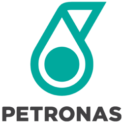 | |
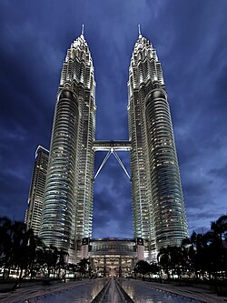 Petronas headquarters in Tower 1 of the Petronas Twin Towers (right) in Kuala Lumpur, Malaysia | |
| PETRONAS | |
| Type | State-owned enterprise |
| Industry | Oil and gas |
| Predecessor | Hidrokarbon Malaysia (HIKMA) |
| Founded | 17 August 1974[1] |
| Founders | |
| Headquarters | Tower 1, Petronas Towers, 50088 Kuala Lumpur, Malaysia |
Area served | Worldwide |
Key people |
|
| Products |
|
| Services | |
| Revenue | US$73.01 billion (2023)[3] |
| US$30.08 billion (2022) | |
| US$17.15 billion (2023) | |
| Total assets | US$164.40 billion (2023)[4] |
| Total equity | US$94.28 billion (2023) |
| Owner | Government of Malaysia |
Number of employees | 47,669 (2020)[5] |
| Subsidiaries | See subsidiaries |
| Website | www |
.png){kind=link}
.jpg){kind=link}
Petroliam Nasional Berhad,[a] commonly known as PETRONAS (stylised in all caps), is a Malaysian multinational oil and gas company headquartered in Kuala Lumpur.[6][7][8] Established in 1974, it is a legal entity incorporated under the Malaysian Companies Act 1965 and reports to the company's Board of Directors. Petronas is vested with all oil and gas resources in Malaysia and is entrusted with the responsibility of developing and adding value to these resources.[9][10]
Petronas is a vertically integrated company and actively in all areas of the oil and gas industry, including exploration and extraction, refining, distribution and marketing, power generation, and trading.[11] Petronas has operations in over 100 countries and has sales office in 22 countries,[12][13] produced around 9 billion barrels of oil equivalent and 50 trillion cubic feet of gas[14] and has around 1,000 service stations nationwide.Petronas formally owned the South African petrol company Engan before the sale of their majority stake Vivo Energy in may of 2024. As of 31 December 2024, Petronas had total proved reserves of 24.5 million barrels (3,900,000 m3) of oil equivalent per day.[15]
The company also has a strong presence in the lubricants market through its wholly owned subsidiary Petronas Lubricants International, which operated in over 100 markets internationally.[16] Petronas Carigali, its principal subsidiary and one of its largest businesses, responsible for hydrocarbon exploration and production. Other subsidiaries include Petronas Dagangan, for gas trading and marketing, and Petronas Chemicals for petrochemical as well as Gentari for clean energy use and commercialization. It also offers higher education through its university, the Universiti Teknologi Petronas (UTP).[17] The Malaysia Petroleum Management (MPM), its key division and a governing body for the petroleum resources development since Petronas' establishment, oversaws the entire lifecycle of the country's upstream oil and gas assets.[18]
In the annual Fortune Global 500 list for 2022, Petronas was ranked at 216th. It also ranked 48th globally in the 2020 Bentley Infrastructure 500.[19] The Financial Times has identified Petronas as one of the "new seven sisters",[20] considered to be influential and mainly state-owned national oil and gas companies from countries outside the Organisation for Economic Co-operation and Development (OECD).[20] Petronas provides a substantial source of income for the Malaysian government, accounting for more than 15% of the government's revenue from 2015 to 2020.[21]
A total of 0.69 percent of the greenhouse gases released through global industrial processes from 1988 to 2015 came from the company's activities.[22] Therefore, Petronas is a major contributor to climate change, a phenomenon that poses many risks to health, jobs, food and water supply stability, security, and economic development.[23] The company celebrated its 50th anniversary in 2024.[24][25]
History
[edit]Origins
[edit]{kind=link}
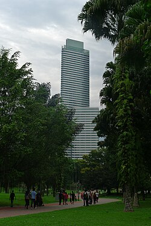
Before the formation of Malaysia, Royal Dutch Shell (now Shell plc) first began the oil exploration in Miri, Sarawak after Charles Brooke signed the first Oil Mining Lease in 1909. In 1910, the first oil well was drilled in Miri. This oil well is later known as the Grand Old Lady.[26][27] In 1929, oil was discovered in Brunei. There were no other drilling activities in Borneo or British Malaya until the 1950s.[28] Shell was still the only oil company in the area in 1963, when the Federation of Malaya, having achieved independence from Britain six years earlier, united with Sarawak and Sabah, both on the island of Borneo, to become Malaysia. Authorities in both new states maintained a close relationship with Shell, which brought Malaysia's first offshore oilfield to fruition in 1968.[28]
In 1966, the enactment of Petroleum Mining Act gave Exxon and Shell rights to explore oil territories and produce oil royalties and tax payments to the government.[29] In the late 1960s, Esso and Continental Oil were given concessions to explore oil off the shores of the east coast of Peninsular Malaysia.[30] By 1974, Malaysia's output of crude oil stood at about 90,000 barrels per day (14,000 m3/d) to 99,000 barrels per day (15,700 m3/d).[30]
20th century
[edit]{kind=link}
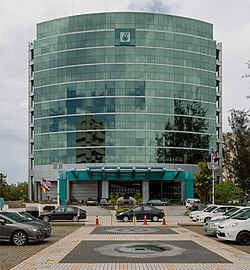
Several factors converged in the early 1970s to prompt the Malaysian government into setting up a state-owned oil and gas company.[31] In 1972, the oil price per barrel was US$1.50, which later rose to US$2.28 per barrel.[10] War in the Middle East and an oil embargo by the Organization of Petroleum Exporting Countries (OPEC) caused the price per barrel to rise to US$12.00, which further incentivised Malaysia to set up its own oil company.[32] Several countries such as United Arab Emirates, Egypt and Indonesia have adopted the production sharing agreement instead of a concession system for oil revenue distribution. The Malaysian government also believed that foreign oil companies did not properly inform the government regarding the oil exploration activities in their own concessions (such as the new discovery of oil fields), thus resulted in a loss of revenue to the government. The formulation of Malaysian New Economic Policy in the early 1970s encourages Malaysians to take control of various modern industries and to open more economic opportunities for the bumiputeras.[28]
The former Sarawak Chief Minister, Abdul Rahman Ya'kub was the first one who proposed the idea of Malaysia setting up an oil company in 1965,[32][33] when he was the Deputy Federal Lands and Mines Minister.[34] It was due to the pressure of the Sarawak people who sought to clarify the exact boundaries of Sarawak territorial waters. In fact, since the formation of Malaysia in 1963, the issue of territorial waters of Sabah and Sarawak has not been fully addressed, thus leaving its interpretation wide open. The Sarawak government has declared that the territorial waters extend well beyond the three-mile limit defined by the Malaysian federal government. However, Abdul Rahman was reminded of Abdul Razak Hussein's act of installing him as the Sarawak Chief Minister. Therefore, Rahman decided to keep the conflict as low profile as possible. Rahman's nephew, Abdul Taib Mahmud assumed the role of Federal Deputy Land and Mines Minister after Rahman became Education Minister and later, the Sarawak Chief Minister. Taib believed in the sharing of oil royalties between the state and the federal government. During the time, the oil mining activities in Sarawak were still under the exclusive control of Shell. Taib initially suggested allowing independent contractors to market government oil. Taib found a Lebanese trader to purchase the Malaysian oil, however, the contractor defaulted on payments, resulting in US$4 million loss. A government hydrocarbon committee was later set up. Taib visited Indonesia and had a discussion with the Indonesian state-owned oil and gas company, Pertamina. Taib suggested that Malaysia scrap the concession system and replace it with a production sharing agreement. However, there were no laws that allowed Malaysia to take back the concessions without compensating foreign oil companies.[35] Despite this, Taib decided to set up a statutory body named Hidrokarbon Malaysia (HIKMA; Malaysia Hydrocarbons),[28] which would have total rights of oil found in the territorial waters of Sabah and Sarawak. However, Rahman protested his nephew's decision and threatened to take the federal government to court if Sarawak were to be left out of this oil deal. Tengku Razaleigh Hamzah, the then-chairman of Perbadanan Nasional Berhad (Pernas), visited Rahman at the latter's private residence in Kuching. Tengku Razaleigh suggested the formation of a company instead of a statutory body where the former would distribute profits equally between the federal and the state governments. Rahman agreed with the suggestion.[32] Tengku Razaleigh drafted the Petroleum Development Act together with his associates in secret, as instructed by Tun Razak, and to be completed before the 1974 Malaysian general election. Rahman then called Tengku Razaleigh to ask about the terms offered by the Malaysian federal government. Tengku Razaleigh then told Rahman regarding abolishment of the concession system. Meanwhile, 5% oil royalty will be given to the respective oil-producing states. Rahman agreed with the deal.[35][36][37]
In 1974, the Petroleum Development Act was tabled and approved in Parliament.[38][39] Petronas was established and incorporated on 17 August 1974 pursuant to the Malaysian Companies Act 1965 with a paid-up capital of RM10 million.[38][40][41] Tengku Razaleigh became its inaugural chairman.[42][43][44] Business tycoon and Tengku Razaleigh's close friend, Ananda Krishnan also played a crucial role in Petronas' establishment, following his experience as an international oil trader.[38] At the time of its establishment, Petronas' headquarters was originally situated at the wooden building within the Prime Minister's Office complex in Jalan Dato Onn, Kuala Lumpur with only 18 staff and two telephone lines before moving to a smaller office at the ENE Plaza, Jalan Pudu in mid-1975.[38] Tengku Razaleigh pointed that all areas where the oil was discovered to be wholly owned by Petronas. He said that the oil company that will explore the resource will only be a contractor and negotiations with state governments will be carried out to obtain an exclusive oil exploration license by Petronas.[45] In October 1974, the company planned a framework to set up a petrochemical company which cost RM300 million, to make fertilizers, plastic materials and artificial yarns.[46]
Initially, Exxon and Shell refused to surrender their concessions and refused to negotiate with Petronas. Petronas then issued a notice to all foreign oil companies that after 1 April 1975, all foreign oil companies would be operating illegally in Malaysian waters if they do not start negotiations with Petronas.[41][47] After a few rounds of negotiations, foreign oil companies finally surrendered their concessions to Petronas.[47] While all other oil-producing states in Malaysia signed the petroleum agreement, Mustapha Harun, the Sabah Chief Minister, stubbornly refused to sign, complaining of the meagre 5% oil royalty. Mustapha requested 10 to 20% oil royalty, threatening to pull Sabah out of Malaysia. Tengku Razaleigh refused to budge. The Malaysian federal government then made another deal with Harris Salleh (who was out of favour with Tun Mustapha) to establish Berjaya party and oust Tun Mustapha.[41] However, Harris was reluctant to become the Sabah Chief Minister, and Fuad Stephens was asked to assume to the Chief Minister post if Berjaya were to come to power. Berjaya successfully ousted Tun Mustapha in the 1976 Sabah state election.[35] One week after the 1976 air crash which killed Fuad and other five state ministers, Harris signed the oil agreement.[48] With Sabah entering the oil agreement, Petronas finally has total control of all oil and gas reserves in Malaysia.[41][49]
On 1 September 1975, Petronas made its first shipment of 358,000 barrels of crude oil to Japan, about 14 months before the first Petroleum Production Sharing Contract (PSC) was signed.[50][41] The company began to supply between 8,000 and 10,000 barrels of crude oil per day to the Philippines through an agreement signed on 11 June 1976. The agreement was reached through negotiations between Petronas and the Philippine National Oil Company (PNOC) where Petronas is led by its Chairman and CEO, Tengku Razaleigh Hamzah while the PNOC is led by its Chairman, Geronimo Z. Velasco.[51] In November 1976, Petronas announced it would provide aviation fuelling facilities for the Bayan Lepas International Airport (now Penang International Airport), followed by two other airports from 1978.[52]
Petronas first embarked on the oil exploration and production activities with the formation of Petronas Carigali in 1978.[41] On 1 April 1978, Petronas signed an agreement with Mitsubishi Corporation and Shell to set up a joint venture LNG company, Malaysia LNG with a cost of RM2.31 billion. Through the joint venture, Petronas holds 65% of equity interest, while Mitsubishi and Shells hold 17.5% each.[53] In May of the same year, Petronas began its first crude oil export from the Pulau and Tapis wells in Terengganu waters to the United States.[54][55] The export is subject to an agreement signed with Pecten Co. from the United States that Petronas agrees to supply 10,000 barrels of crude oil per day for a year to the country.[56] Later, in June, the installation work of an oil exploration rig co-owned by Petronas and Esso began underway, enabling them to process 35,000 barrels of crude oil per day in Bekok, Terengganu. The Bekok rig, which costs RM68 million, has the capacity to drill 12 wells simultaneously and oil production work would likely begin in September.[57] In 1979, Petronas was commissioned by the government as the Malaysian shareholder in the ASEAN urea project in Indonesia and also as an agency to make the project a success for the country.[58]
In 1980, Petronas expanded its downstream businesses by setting up the ASEAN Fertilizer plant in Bintulu, Sarawak.[59] In May 1980, Petronas signed a production-sharing agreement with BP Petroleum Development, Oceanic Exploration and Development, a division of British petroleum corporation BP, covering an area offshore Sabah. Under the agreement, these companies will prospect for hydrocarbons in an area of 3,660 square kilometres off the northeast of Sabah. Petronas' exploration subsidiary, Petronas Carigali and BP serves as the project's joint operators.[60] Two months later, Petronas supplying 50% of LPG output to Summit Petroleum to help the latter stay on as a gas supplier in the market. It also has undertaken to supply 230 tonnes of LPG to Summit per month.[61] In 1982, Petronas through its subsidiary, Petronas Carigali began to build five platforms in the Duyung and Sotong fields, about 224 kilometres off the coast of Terengganu. Three of the gas platforms will involve exploration, gas processing and another will house workers. All five platforms will be built by a Johorean company.[62] Subsequently, in early November, Petronas signed an agreement with Esso for sales and purchases of natural gas for phase 1 of the Terengganu gas project.[63] The company's first drillship for the operations of its subsidiary, Petronas Carigali, was launched on 15 January 1983 at the Promet Shipyard, Singapore. It was built at a cost of approximately RM70 million. The drillship was named as ‘Parameswara’ by Suhailah Noah, wife of the then-Petronas advisor, Hussein Onn,[64][65] while at the same time, it intended to supply the LPG to Singapore for use by the Petrochemical Complex in Pulau Ayer Merbau as an addition to the gas supply promised earlier for the power stations here.[66] Subsequently, in mid-1983, Petronas' drilling subsidiary, Petronas Marine was established to handle drilling contract work that required for the company's exploration of oil and gas.[67] Petronas through its trading subsidiary, Petronas Dagangan began to set up a service station in September 1983 and planned to open 300 stations nationwide by 1990.[68]
In 1984, Petronas moved to Dayabumi after occupying various buildings in Kuala Lumpur.[69] The company then acquired the Dayabumi podium and tower block from the Urban Development Authority (UDA; now UDA Holdings) for RM443 million after a sale agreement was signed four years later, in June 1988.[70][71] The company sold a 5% stake in Malaysia LNG to the Sarawak State Government in late 1985 for an undisclosed sum with a 60 per cent share.[72] On 11 June 1988, Petronas signed 16th PSC with a consortium comprising two leading American and one Canadian firms, while concurrently entering into "an exploration boom". These companies – Sun Petroleum, Champlin and Gulf Canada – will cooperate with Petronas exploration subsidiary, Petronas Carigali to jointly explore oil in the Straits of Malacca.[73] On 24 March 1989, Petronas signed a 15-year PSC with Sarawak Shell in which its exploration arm, Petronas Carigali would take over oil fields operated by Sarawak Shell in Baram Delta, off Sarawak.[74]
Oil exploration was by no means at an end and could yet produce more reserves. The Seligi field, which came onstream at the end of 1988 and was developed by Esso Production Malaysia, was one of the richest oilfields so far found in Malaysia waters, and further concessions to the majors would encourage exploration of the deeper waters around Malaysia, where unknown reserves could be discovered. Meanwhile, computerised seismography made it both feasible and commercially justifiable to re-explore fields which had been abandoned, or were assumed to be unproductive, over the past century. In 1990, Petronas invited foreign companies to re-explore parts of the sea off Sabah and Sarawak on the basis of new surveys using up-to-date techniques.[41]
Another way to postpone depletion was to develop sources of oil, and of its substitute, natural gas, outside Malaysia.[41] Late in 1989, the governments of Vietnam and Myanmar (Burma) invited Petronas Carigali to take part in joint ventures to explore for oil in their coastal waters.[75] In 1990, a new unit, Petronas Carigali Overseas, was created to take up a 15% interest in a field in Myanmar's waters being explored by Idemitsu Myanmar Oil Exploration Co. Ltd., a subsidiary of the Japanese firm Idemitsu Oil Development Co. Ltd., in a production sharing arrangement with Myanma Oil and Gas Enterprise.[76] Thus began Petronas' first oil exploration outside Malaysia.[77] In May 1990, the governments of Malaysia and Thailand settled a long-running dispute over their respective rights to an area of 7,300 square kilometres in the Gulf of Thailand by setting up a joint administrative authority for the area and encouraging a joint oil exploration project by Petronas, the Petroleum Authority of Thailand, and the US company Triton Oil. In a separate deal, in October 1990, the Petroleum Authority of Thailand arranged with Petronas to study the feasibility of transferring natural gas from this jointly administered area, through Malaysia to Thailand, by way of an extension of the pipelines laid for the third stage of the Peninsular Gas Utilisation Project.
That project was on course to becoming a major element in the postponement of oil depletion. Contracts for line pipes for the second stage of the project were signed in 1989 with two consortia of Malaysian, Japanese, and Brazilian companies. This stage, completed in 1991, included the laying of 730 kilometres of pipeline through to the tip of the Peninsula, from where gas could be sold to Singapore and Thailand; the conversion of two power stations—Port Dickson and Pasir Gudang—from oil to gas; and the expansion of Petronas' output of methyl tert-butyl ether (MTBE), propylene, and polypropylene, which were already being produced in joint ventures with Idemitsu Petrochemical Co. of Japan and Neste Oy of Finland. The third and final stage of the project was to lay pipelines along the northwest and northeast coastlines of the Peninsula and was completed in 1997.
Another new venture in 1990 was in ship-owning, since Petronas' existing arrangements with MISC and with Nigeria's state oil company would be inadequate to transport the additional exports of LNG due to start in 1994, under the contract with Saibu Gas.[citation needed] In February 1991, Petronas announced its intent to begin oil and gas exploration in deepwater offshores while citing that "most shallow areas have been taken up".[78][79] In August the same year, Petronas began to sending two cargoes of its new Dulang crude oil for spot processing in China and Singapore to ensure its good quality.[80][81] Petronas through Petronas Carigali signed an agreement with Vietnamese oil company, Petrovietnam in September 1991 to exploring oil in two offshore areas of the southern coast of Vietnam.[82] The company began to supply 15,000 barrels of crude oil for one-year term from October to two refineries belongs to the Petroleum Authority of Thailand in an agreement signed on 24 September.[83] In October, the company acquired 15 and 20 per cent stakes in two oil exploration blocks in China, with each blocks in the Gulf of Bohai and the Pearl River Mouth basin respectively from the British Petroleum. Prior to the acquisition, Petronas has signed a PSC for two offshore blocks in Vietnam.[84] In early 1992, Petronas began to commission two additional oil platforms at Baronia field in the Baram Delta, off Sarawak.[85] The company then secured a RM510 million loan on 15 February 1992 to part-financed a massive gas transmission network. The loan is provided by the Employees Provident Fund (EPF) and guaranteed by 10 financial institutions as well as Petronas Gas' officials.[86] Petronas and the two consortia of Malaysian and Japanese companies signed a joint venture agreement on 30 March to set up a natural gas distribution for Peninsular Malaysia, in which the company holds 20% shares, while MMC-Shapadu Holdings and Tokyo Gas-Mitsui holds the remaining 55% and 25% shares respectively.[87] Two months later, in May 1992, Petronas starts negotiations with Mobil and Shell to renew term contracts, which to be expired in July for processing its domestic crude oil while seeking for a lower fees in Singapore.[88] On 12 May, Petronas through its marine subsidiary, Petronas Marine allocates RM5139.5 million from the offshore capital markets to provide financial assistance to three of five new LNG tankers. It is the largest syndications ever made by Petronas.[89][90] In July, a one year term deal has been renewed. It also has another contract with BP to process 5,000 barrels of oil per day, which to be expired in September.[91] The company signed a joint venture agreement with Novacorp in September that year to set up a new energy company, Oil, Gas and Petrochemical Technical Services which would act as a management consultant of several projects.[92]
{kind=link}
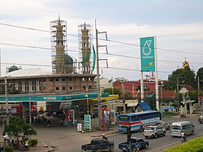
In February 1993, Petronas partnered with American oil and gas company, Conoco Inc. to jointly develop a second Petronas-owned oil refinery in the country. The refinery is to be located in Tangga Batu, Sungai Udang district, Malacca with the capacity to refine 100,000 to 130,000 barrels of sour crude per day.[93][94] The company began to stop processing crude oil in Singapore beginning July 1993, citing "as there has been no accord yet with two refiners for renewing term processing".[95] In August, it also had reduced term crude oil processing in that country due to higher refining fees for the year 1993 and shrinking profit margins. This after negotiations with one of two refiners to renew contracts was expired a month earlier.[96][97] The company, through Petronas Marine also signed a 20-year agreement with Mitsubishi's wholly owned subsidiary, Mitsubishi Heavy Industries to repair and maintain five LNG tankers.[98] Petronas and Tenaga Nasional signed a power agreement on 1 October 1993 to enable the latter supplying electricity to the company's Phase One refinery project (PSR1) at Sungai Udang and for future industrial development needs in the surrounding areas.[99] Six days later, it partnered with Sarawak Shell to spend RM9 billion over a 20-year period to develop gas fields off the East of Sarawak.[100]
On 17 February 1994, the first shipment of 400,000 barrels of crude oil arrived at the new refinery at Tangga Batu, 14 kilometres from Kerteh, Terengganu.[101] The second Petronas refinery in Tangga Batu that was completed and began operations in May 1994 with a capacity of 100,000 barrels per day (16,000 m3/d), promoted the same policy.[102][103][104] The fact that it was built in a joint venture with Samsung of Korea, the Chinese Petroleum Corporation of Taiwan, and Caltex of the United States did not negate the policy, for the subsidiary company Petronas Penapisan (Melaka) had a decisive 45% of equity while sharing the enormous costs of and gaining advanced technology for the project. More to the point, a side effect of the refinery's completion was that Petronas was able to refine all of the crude oil it produced, instead of being partially dependent on refining facilities in Singapore.[citation needed] It also has signed 11 billion yen (RM 170.9 million) syndicated term loan to refinance existing yen loans which that linked to its gas grid project in Labuan in August that year.[105] Petronas inked a long-term agreement with Tohoku Electric Power in July to supply 500,000 tonnes of LNG annually to the latter.[106] By the end of August 1994, the company shuts down output from the offshore Tapis field in order to underwent a routine maintenance. It also has stopped producing oil from the field of the South China Sea on 27 August.[107] During the mid to late 1990s, international exploration, development, and production remained key components in Petronas' strategy along with diversification. A key discovery was made in the Ruby field in Vietnam in 1994. That year, the firm also saw its first overseas production from the Dai Hung field in Vietnam and established its first retail station outside of Malaysia in Cambodia.[citation needed] On 2 November 1994, Petronas signed a contract with Mobil to explore for oil in deepwater areas of the South China Sea. The contract consists of two blocks off Borneo island, above all Sarawak.[108] A week later, on 9 November, Petronas signed an agreement with Conoco to build a second crude oil refinery where Petronas holds a 45 per cent stake in the venture and Conoco holds the remaining 40 per cent.[109][110] In 1995, a subsidiary was created to import, store, and distribute liquefied petroleum gas (LPG). In addition, the company's polyethylene plant in Kerteh began operations. Petronas marked a significant milestone during this time period—two of its subsidiaries, Petronas Dagangan and Petronas Gas, went public on the Kuala Lumpur Stock Exchange (now Bursa Malaysia).[111][112] The company formed a contract with China National Offshore Oil Corporation and Chevron Overseas Petroleum in July 1995 to begin the exploration of block 02/31 of the Liaodong Bay area in China.[113][114] Petronas went on to sign an agreement with four companies in August to supply gas to the third LNG plant project in Sarawak. Those companies — Occidental Petroleum, Sarawak Shell, Petronas Carigali and Nippon Oil — jointly developed and produced gas from the Central Luconia area in offshore Sarawak.[115] In September, the company, through its subsidiary Petronas Carigali expanding outside Southeast Asia began to strike oil in Syria, which had been made from the exploratory wells drilled in the East Ash Sham blocks.[116] The company signed a deal with the Japanese Government to sell LNG to Sendai city in Japan. Under a deal signed on 15 November 1995, Petronas would supply up to 152,000 tonnes of LNG annually to Sendai for 20 years starting in May 1997.[117] In December, the company inked a deal with Japan's Nippon Oil, Occidental LNG and Shell Gas BV of the Netherlands to build a multi-billion-dollar natural gas plant, which is the third to be built in Malaysia.[118][119]
In March 1996, the company began to undertaking a Petrochemical Master Plan study and helped to formulate a Gas Master Plan for the Indochinese country.[120] Subsequently, it partnered with Sinopec Zhuhai Yuehua Petrochemical Company, Nissho Iwai Corporation, Guangdong Province Petroleum Enterprise Group and Yangjiang Company to envision the construction of a liquefied petroleum gas bottling, storage and distribution plant in Yangjiang City, Guangdong, China.[121][122] In May the same year, Petronas entered the aromatics market by way of a joint venture with Japanese conglomerate, Mitsubishi Corporation that created Aromatics Malaysia.[123][124] As part of its globalization plan, the company purchased 30% stake of the former sub-Saharan branch of Mobil Oil in June, rebranded as Engen Petroleum.[125][126][127] While the Asian economy as a whole suffered from an economic crisis during 1997 and 1998, Malaysia was quick to bounce back due to successful government reforms. From its new headquarters in the Petronas Twin Towers, the state-owned company continued its development in the oil and gas industry.[128]
During 1997, Petronas heightened its diversification efforts.[129] In February, Petronas and German chemical company, BASF agreed to co-embark on the construction and operation of three petrochemical plants at the Gebeng Industrial Estate in Kuantan, Pahang.[130][131] Petronas partnered with British petroleum company, BP through its subsidiary, BP Chemicals to jointly invest in a 500,000 tonnes per annum acetic acid plant in Kuantan. The plant scheduled to begin operations at the end of 1999.[132][133] On 21 March, the company introduced an incentive in its PSC to "encourage more exploration investments" and to "enhance the country's oil and gas reserves" through a new concept called "Revenue-over-Cost" which aimed to reward efficient contractors.[134] Its first LPG joint venture in China was launched on 29 March that year.[135][136] Subsequently, in August the same year, Petronas, through its subsidiary, Petronas Chemicals partnered with BASF to set up a joint-venture company, the BASF Petronas Chemicals. The new joint-venture operates the Verbund Integrated Site located in the Gebeng Industrial Zone, Pahang. The company's share capital is 60% held by BASF while the remaining 40% held by Petronas.[137][138][139][140] A month later, the company announced the aromatics complex in Kertih, Terengganu, which adjacent to its refinery operated by Petronas Penapisan (Terengganu), began construction by a consortium led by Toyo Engineering Corporation and is scheduled to commenced operations by the fourth quarter of 1999.[124][141] On 16 September, the company acquired a 29.3% interest in Malaysia International Shipping Corporation Berhad (MISC).[142][143][144][145]
In 1998, Petronas' tanker subsidiary, Petronas Tankers merged with MISC, increasing the company's stake in MISC to 62%.[146] In March, the company acquired the entire shipping business from Konsortium Perkapalan in a cash deal which both companies denied was "a bailout of the listed vehicle" of the then-Prime Minister Mahathir Mohamad's son, Mirzan.[147] That year, Petronas introduced the Petronas E01, the country's first commercial prototype engine.[148] The company also signed a total of five new production sharing contracts (PSCs) in 1998 and 1999, and began oil production in the Sirri field in Iran.[citation needed] On 1 April 1998, Petronas began to change its crude pricing mechanism. Under the new mechanism, the new monthly crude prices will use 100% base components of Asia Petroleum Prices Index (APPI) quotes.[149]
In March 1999, Petronas signed a memorandum of understanding (MoU) with South African oil company, Sasol Ltd. to exploring cooperation between the two companies, including the establishment of a new oil company.[150] On 25 March 1999, the company's science centre, Petrosains was established and began operations to provide "an information learning centre on the petroleum industry and related technology".[151][152][153] The company also began to diversify into non-traditional countries like Indonesia, India and China.[154] On 7 December 1999, the company signed a deal with Bruneian energy company, SKBB Holdings to cooperated in petroleum and related businesses. The deal enable SKBB to import, store and sell Petronas petroleum products through retail stations in Brunei under the Petronas brand.[155]
21st century
[edit]In March 2000, the company finalised an oil production deal in Chad, North Africa.[156] On 19 July 2000, the company discovered oil in the Samarang-Asam Paya production sharing contract area in Sabah. The tests carried out showed that the Alab-1 well flowed oil at a rate of 4,700 barrels per day.[157] Petronas and Indonesian oil and gas company, Pertamina inked a maiden oil refining and gas sale deal on 5 October 2000 in which the company will buy natural gas from Pertamina.[158] Petronas, in June 2001, began to introduce the natural gas-powered Enviro 2000 cars to Thailand while it had signed a three-year pact with the Petroleum Authority of Thailand to introduce the five-seater cars.[159] In September, the company forged deals for two new exploration plots in Pakistan and began construction on the Chad-Cameroon Integrated Oil Development and Pipeline Project.[160][161] Petronas announced on 9 November 2001 that it was in talks with BP to acquire the latter's one third stake in Singapore Refining Co.[162][163]
By 2002, Petronas had signed seven new PSCs and secured stakes in eight exploration blocks in eight countries, including Gabon, Cameroon, Niger, Egypt, Yemen, Indonesia, and Vietnam.[citation needed] The firm also made considerable progress in its petrochemicals strategy, opening new gas-based petrochemical facilities in Kerteh and Gebeng.[164] It also planned to divest its remaining 15.4 of its shares in Proton in order "to help the government-owned investment arm consolidate shares" in the carmaker.[165] In May the same year, Petronas announced to introduce the natural gas-powered Enviro 2000 cars to the Philippines in order to promote the usage of clean and cheap fuel while also planning to expand operations there.[166] The company announced in June that it was interested to acquire stakes in Singapore Refining.[167][168] In September 2002, Petronas discovered new oil and gas reserves in the Turkmen part of the Caspian Sea with a flow rate of 14,176 barrels of oil and 19.05 million standard cubic feet.[169] The company buy out minority shareholders in oil group Energy Africa in December.[170]
By 2003, Malaysia was set to usurp Algeria as the world's second-largest producer of LNG with the completion of the Malaysia LNG Tiga Plant. Prime Minister Mahathir Mohamad commented on the achievement in a May 2003 Bernama article, claiming that "the Petronas LNG complex now serves as another shining example of a vision realized of a national aspiration, transformed into reality by the same belief among Malaysians that 'we can do it'".[citation needed]
In 2004, Minister in the Prime Minister's Department, Mustapa Mohamed, stated that Petronas contributed RM25 billion to the country's treasury accounting for 25% of revenue collected via dividends and other revenues.[171] In January the same year, Petronas has inked a joint venture for an offshore oil exploration project in the Philippines.[172] The company announced in November that it would likely to privatise more subsidiaries as it pursues costly international expansion, which former Prime Minister, Mahathir Mohamad said that it "should remain in state hands" while stated that "it all depends upon the finances of Malaysians".[173][174]
On 2 May 2006, Petronas awarded a deepwater exploration block in offshore Vietnam, in a joint-venture deal with Chevron Corporation. The PSC for Block 122, which covers 6,981 square kilometres, marks the company's first deepwater acreage in Vietnamese territory.[175] In October the same year, Petronas signed a 25-year agreement with China's Shanghai LNG to supply 3.03 million tonnes of LNG per year. The deal was estimated $25 billion based on current prices. It became Petronas's first LNG deal with China and marked a milestone in the expansion of its relationship with the country. The LNG will be delivered from the company's LNG complex in Bintulu, Sarawak, to Shanghai LNG's receiving terminal in Zhejiang Province.[176][177]
{kind=link}
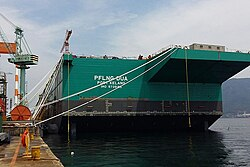
{kind=link}
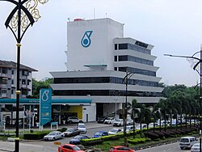
On 20 September 2007, Petronas has reached an agreement to acquire the Italian lubricant manufacturing company, FL Selenia from Kohlberg Kravis Roberts (KKR) for about RM1.4 billion, subject to regulatory approval.[178] In November 2007, the company acquires Star Energy for RM6.9 million with the aim "to gain control of the UK's second-largest onshore oil producer",[179][180] but later divested it in 2011 when iGas Energy acquired stakes in Star Energy from Petronas.[181][182] Petronas said the divestment of Star Energy enable it to focus on optimising the Humbly Grove Gas Storage facility as part of its strategy "to focus on growing its European asset returns through marketing and trading".[183]
Petronas continued to focus on international exploration projects as 40% of revenue in 2008 was derived from international projects such as Iran, Sudan, Chad and Mauritania. The company's international reserves stood at 6.24 billion barrels oil equivalent in 2008.[184] The Petronas overseas expansion drive continues with the acquisition of Woodside Energy's Mauritania assets for $418 million in 2007.[185] The venture proved successful as they discovered oil in May 2008.[186]
Petronas signed a RM363 million deal on 1 September 2010 to acquire BP's interests in two petrochemical plants in Terengganu.[187] On 26 July 2011, Petronas signed two gas supply agreements related to the Kebabangan cluster PSC area off Sabah. These deals aimed to distribute natural gas from the cluster PSCs to both customer sectors in Sabah and to the company's LNG Complex in Bintulu, Sarawak. The first agreement involved the company acquired gas from the PSC contractors and acting as an aggregator, while the second involved Petronas and the PSC contractors as joint sellers to MLNG Dua.[188][189][190] Two days later, Petronas through its exploration subsidiary, Petronas Carigali has discovered two significant natural gas fields in shallow waters off the west coast of Sabah. These discoveries were made at the Zuhal East-1 well in the Samarang Asam Paya Block and the Menggatal-1 well in Block SB312. The estimated gas-initially-in-place for these discoveries was about 550 billion standard cubic feet (BCF) and 650 BCF, respectively.[191][192][190][193] In November, Petronas was in talks with several of its oil and gas counterparts, including Royal Dutch Shell and ExxonMobil, to develop petrochemical plants within its RM25.8 billion refinery complex in Johor.[194][195]
In June 2012, Petronas announced its intent to acquire Canadian energy company, Progress Energy Resources about US$5.3 billion. The acquisition will allow Petronas a "control of vast shale gas reserves in Canada".[196][197] On 29 October 2012, Petronas sources said it would renew a bid for Progress Energy Resources after Canada blocked its bid earlier that month. The $6-billion bid was approved by Ottawa on 7 December 2012.[198] The company's acquisition of Progress Energy was completed and approved by the then-Canadian Prime Minister, Stephen Harper on December 10.[199] Petronas acquired about 100,000 barrels of 95-octane petrol from the Singapore spot market in November 2012, which is considered as "a rare move" by Singaporean traders.[200]
On 17 January 2013, Petronas issued a statement that an onshore oil and gas discovery has been made in the state after drilling a test well about 20 kilometres away from the city of Miri in northern Sarawak. The well was found to have a net hydrocarbon thickness of 349 meters. It had flow rates of 440 barrels of crude oil per day and 11.5 million standard cubic feet of gas per day. The find is the first onshore oil discovery in Malaysia in 24 years.[201] In July, the company planned to sell its stake in a US$20 billion Canadian LNG export project to as low as 50%,[202] while intended "to share the cost of bringing cheap energy to Asia". It also in talks with Sinopec to obtain at least 10% of equity stake.[203] In September, Petronas withdrew from the Petrocarabobo crude oil project in Venezuela following disagreements with the Venezuelan authorities and state-run PDVSA.[204][205][206]
On 2 May 2015, Petronas completed its acquisition of oil and gas assets in Azerbaijan from Norwegian oil company, Statoil (now Equinor) for US$2.25 billion.[207] Plagued by the 2010s oil glut, Petronas reported on 26 February 2015 that it cut its 2015 capital expenditures budget after reporting a $2 billion fourth quarter loss, the company's first loss since it began reporting quarterly results five years ago.[208] In October, despite the tumble in oil and gas prices has hurt its profitability, the company reaffirms its commitment to its LNG project to Canada, which began in September.[209][210] The proposed company's LNG project in Canada was approved by the Canadian Government in September 2016.[211]
Petronas announced in March 2016 that it would laid off 1,000 of its workers as part of its corporate restructuring scheme which took place effective the first day of April that year. The restructuring was made as part of the company's transformation to optimize operations and reduce costs. This comes after its counterpart, Royal Dutch Shell announced that it would terminate 1,300 out of 6,500 of its workers in Malaysia a year before.[212][213][214]
On 30 March 2017, Petronas and Singaporean energy company, Pavilion Energy inked a memorandum of understanding (MoU) to explore LNG collaboration opportunities. The deal was made to "explore the supply and optimisation of LNG including spot trading and cargo swaps".[215][216][217] Two days later, on 1 April, Petronas' PFLNG Satu, the world's first floating liquefied natural gas (LNG) facility, has achieved a new milestone with the successful loading of its first cargo at the Kanowit gas field, offshore Bintulu, Sarawak.[218] On 25 July 2017, Petronas cancelled a $36-billion liquefied natural gas (LNG) project, the Pacific Northwest LNG, which was considered ambitious and a priority in the Canadian province of British Columbia. Both the company and the province blamed poor global LNG market conditions.[219]
On 9 April 2019, Petronas was praised for its role in the Sudanese oil and gas industry by Minister of Oil and Gas engineer Yagoub Adam Bashir Gamaa.[220] Later, on 15 April, Petronas acquires 100% interest in Singaporean energy company, Amplus Energy Solutions, also known as M+ as part of its strategy to move into renewable energy, pursuing highgrowth business to complement its business operations.[221][222][223][224]
In January 2020, prior to the COVID-19 pandemic, Petronas through its subsidiary, Petronas LNG signed a heads of agreement (HoA) with Shenergy Group to supply approximately 1.5 million tonnes per annum of LNG to its Wuhaogou receiving terminal in China. The agreement is a 12-year term beginning in 2022 and ended in 2034.[225]
In 2021, Petronas introduced a sonic identity as part of a broader rebranding initiative aimed at expressing the brand platform "Passionate about Progress".[226][227] The sonic identity blends contemporary musical textures with traditional Malaysian instruments and is deployed across films, events and brand communications[228]
In 2024, Petronas, Italy's Enilive SpA, and Japan's Euglena Co. announced a final investment decision to establish a biorefinery in Malaysia. A joint venture will oversee the construction, slated to begin in the fourth quarter of this year at Petronas's integrated refinery and petrochemical complex in Pengerang, Johor. The facility is designed to process approximately 650,000 tons of raw materials annually, producing sustainable aviation fuel, hydrogenated vegetable oil, and bio-naphtha. The biorefinery is expected to commence operations in the second half of 2028.[229]
In May 2024, Petronas divested a 74% stake in Engen Limited to Vivo Energy.[230]
In 2024 Petronas entered Brazil by partnering with Brazilian company SIM Distribuidora opening 3 “pilot stations” in key urban areas. This is part of Petronas’s plan of entering the South American market.Petronas currently operates more than 60 outlets in Brazil and are aiming at opening more than 1000 locations in the near future.
In April 2025, a gas pipeline burst near Kuala Lumpur injuring 145 people and sending a 20-story flame into the sky. There were more than 190 house and 148 cars that were damaged due to the explosion located near a Putra Heights gas station.[231]
A joint declaration was signed on 21 May 2025 between the Malaysian Prime Minister and the Sarawak Premier for the ongoing oil and gas distribution dispute within Sarawak.[232] It acknowledged the Petroleum Development Act 1974, existing agreement statues as well as established a framework for cooperation between Petronas and Petros.[233]
Petronas CEO announced at a briefing on 5 June 2025 that it would be restructuring and cutting out 10% of its workforce due to the decreasing crude oil prices impacting profits.[234][235]
In July 2025, the first liquefied natural gas (LNG) shipment from Petronas LNG Canada departed for Japan on board the Puteri Sejinjang LNG vessel.[236] The new facility, located in Kitimat, British Columbia, is one of the lowest-emissions LNG export facilities in the world which incorporates energy-efficient gas turbines as well as state of the art systems for detecting and mitigating methane leaks.[237]
In October 2025, Petronas sold a fifth of its 25% stake in LNG Canada to MidOcean.[238] The deal also included MidOcean acquiring 20% of the North Montney LNG Ltd Partnership.[239]
In November 2025, Petronas entered a memorandum of understanding (MuO) with Dragon Oil of the United Arab Emirates to explore opportunities for joint projects in the oil and gas sectors.[240]
In April 2026, Petronas announced that it was to implement the first carbon dioxide (CO2) injection in the Kasawari gas field carbon capture and storage (CCS) project as early as 2027.[241]
Corporate affairs
[edit]PETRONAS is a legal entity incorporated under the 1965 Malaysian Companies Act and reports to the company's Board of Directors. The Malaysian federal government is the sole shareholder of the company. Key positions in the company are all appointees from the federal government. The federal government also controls the amount of dividend payout to finance the yearly budget of the country.[242] In December 2019, Prime Minister Mahathir Mohamad mooted an idea of selling a percentage of PETRONAS stake to Sabah and Sarawak because the Pakatan Harapan government was unable to fulfill its promise of giving 20% oil royalty to both the states.[243] The price of the purchase was reported to be RM8 billion for one per cent of the company. The proposal was met with a cold response from Sarawak. This is because once the shares are bought, Sarawak can only become a minority shareholder. Sarawak therefore would not have much of a voice in the PETRONAS board meetings. Due to its high share price, the money, once invested, may also have difficulties breaking even in the future.[244] A lawmaker from Sarawak stated that PETRONAS acts as a trustee for the oil and gas fields in both the states; therefore, it makes no sense of buying a property that should have already been owned by the state governments.[245] The brand valuation of PETRONAS as of January 2021 was US$12 billion (RM 48 billion according to conversion rate of US$1.00 to RM 4.00).[246] Total stockholder equity as of February 2021 was US$82 billion (RM 328 billion).[247]
Production sharing contracts
[edit]Production-sharing contract (PSC) was signed between PETRONAS and other foreign oil companies in 1976. A ratio of 70:30 was agreed upon where for total amount of oil produced, other oil companies will take 20% of oil for cost recovery (cost oil), and the remaining 10% will be taken as oil royalty and shared equally between federal and respective state governments. The remaining 70% of oil (profit oil) will be divided again according to 70:30 formula where PETRONAS will take 70% and 30% goes to respective oil companies. Both PETRONAS and other oil companies will be subjected to 45% income tax by the federal government. Besides, 70% of any increase in oil price from the base price of US$12.72 will go to PETRONAS and the base price will increase by 5% each year so other oil companies will be able to cover for any cost inflation. In return, PETRONAS will not take over the equity of other oil companies. Each oil company will contribute 0.5% for a petroleum research fund.[248][249]
Another PSC (the deep-water model) was developed in 1985 to attract other oil companies to enter the Malaysian oil mining scene, while taking into account the rising cost of oil exploration (cost oil of 28%). Sharing of oil revenue become more flexible, depending upon the depth of the oil is found. The deeper the oil seeps (from 200 meters to more than 1 km), the higher the cost oil (50 to 75%). However, foreign oil companies will get higher share of profit oil (from 30 to 85%) in deep-water oil mining.[28]
In 1997, revenue over cost (R/C) model was adopted for PSC. PETRONAS will get higher share of profit oil as R/C ratio increases.[28] In the meantime, 10% oil royalty stays the same throughout the years. Overall, the earns 13.3% on R/C model and 12.5% on deep-water model. Meanwhile, the federal government earns 37% in R/C model and 25% in deep-water model.[249]
Financial structure
[edit]PETRONAS has been publishing its financial reports online since 2008.[250][251] However, certain quarters demanded detailed profit and loss accounts and reports on PSCs with other companies for transparency instead of just providing a summary of profits before tax.[252][253][254] Responding to allegations of public funds mismanagement, the company responded that its profits are managed by the Malaysian federal government, not by the company itself.[255]
In 2007, PETRONAS revenue come from petroleum exports from Malaysia (50%), domestic operations (20%) and international operations (30%).[256] The weightage of the revenue streams were similar in 2020, where international operations accounted for 33% of total revenue received by the company.[257]
PETRONAS continuously provides the Malaysian government dividends from its profits. Since its inception in 1974, it have paid the government RM 403.3 billion, with RM 67.6 billion in 2008. The payment represents 44% of the 2008 federal government revenue.[258] PETRONAS paid RM 54 billion in dividends to the federal government in 2019. In 2022, the company contributed RM 50 billion to the federal government.[259]
Malaysia Petroleum Management
[edit]The Malaysia Petroleum Management (MPM) is a management division of Petronas and a governing body for the petroleum resources development since the company's establishment. It entrusted to act for Petronas in the overall management of petroleum resources and oversees the entire lifecycle of the country's upstream oil and gas assets while ensuring "sustainable development, creating value and fostering a competitive investment climate".[18][260]
The MPM also functioned as a resources owner to ensures the sustainability of the country's petroleum resources base via long term planning, safer execution of exploration, development and production activities. It also promotes local capability development and economic spinoffs in the oil and gas industry.[260]
Visual identity
[edit]Petronas introduced its corporate logo which was created in 1974[261][262] by Dato' Johan Ariff from Johan Design Associates.[262] The basic structure of Petronas logo is geometric, embodying metaphoric and alpha glyphic nuances of an oil drop and a typography 'P', the latter being evident in the triangle assigned at the top right corner. The triangle is also an essential element to define directional movement and dynamic. The placement of a solid circle in the logo is interpretive of the wheel in the oil and gas industry while the outline of the drop simulates a driving system, the energy which is derived from petroleum. The corporate colour chosen for the logo is emerald green, referencing the sea where oil and gas is procured.[263][264] On 22 July 2013, Petronas unveiled a refreshed version of its corporate logo in that year's Asia Oil and Gas Conference, symbolising the growth and progression of its brand. It is the third iteration of the logo.[261][265][266] The flat version of Petronas logo was introduced in 2019.
Logo evolution
[edit]- 1990–2013
- 2013–present
{kind=link}
{kind=link}
Operations
[edit]Business segments
[edit]Petronas is organised into four major business segments:[267]
- Upstream — manages the upstream business. It searches for and recovers crude oil and natural gas and operates the upstream and midstream infrastructure necessary to deliver oil and gas to the market. Its activities are organised primarily within geographic units, although there are some activities that are managed across the business or provided through support units.
- Gas and Energy — manages to liquefy natural gas, converting gas to liquids and low-carbon opportunities.
- Downstream — manages Petronas' manufacturing, distribution, and marketing activities for oil products and chemicals. Manufacturing and supply include refinery, supply, and shipping of crude oil.
- Project Delivery and Technology — manages the delivery of Petronas' major projects, provides technical services and technology capability covering both upstream and downstream activities. It is also responsible for providing functional leadership across Petronas in the areas of health, safety and environment, and contracting and procurement.
Oil and gas activities
[edit]{kind=link}
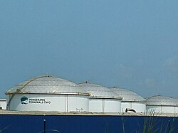
{kind=link}
Petronas' primary business is the management of a vertically integrated oil company. The development of technical and commercial expertise in all stages of this vertical integration, from the initial search for oil (exploration) through its harvesting (production), transportation, refining and finally trading and marketing established the core competencies on which the company was founded. Similar competencies were required for natural gas, which has become one of the most important businesses in which Petronas is involved, and which contributes a significant proportion of the company's profits. While the vertically integrated business model provided significant economies of scale and barriers to entry, each business now seeks to be a self-supporting unit without subsidies from other parts of the company.[268]
Traditionally, Petronas was a heavily decentralised business worldwide (especially in the downstream) with companies in over 100 countries, each of which operated with a high degree of independence. The upstream oil sector is also commonly known as the "exploration and production" sector.[269][270]
Downstream operations, which now also includes the chemicals business, generate the majority of Petronas' profits worldwide and is known for its global network of more than 1,000 petrol stations and its various oil refineries. The downstream business, which in some countries also included oil refining, generally included a retail petrol station network, lubricants manufacture and marketing, industrial fuel and lubricants sales, and a host of other product/market sectors such as LPG and bitumen. The practice in Petronas was that these businesses were essentially local often with middle and senior management reinforced by expatriates.[271]
Subsidiaries
[edit]Petronas has more than 100 subsidiaries and around 40 joint venture companies in which it has at least 50% stake in the company. Although it is considering to listing more of its subsidiaries,[272] so far the company has listed at least 3 of its subsidiaries in the Bursa Malaysia.
Main subsidiaries
[edit]- Petronas Carigali is an exploration and production subsidiary of Petronas which responsible for hydrocarbon exploration and production within Malaysia. The company has numerous partnerships with major oil and gas industry companies worldwide, including Shell plc and BP. Its international arm, Petronas Carigali Overseas, aimed at finding new blocks in international areas.
- Petronas Dagangan is a trading subsidiary of Petronas which involved in the distribution and sale of finished petroleum products and operations of service stations for the domestic market. The company has over 800 petrol stations around Malaysia as of July 2007,[273] and further increased to 870 stations in January 2008.[274] The company has also teamed up with local food and beverage companies, banks and transportation companies to provide better services at their petrol stations, including McDonald's, KFC, Dunkin' Donuts, Konsortium Transnasional, Maybank and CIMB Bank.
- Petronas Gas is a gas subsidiary of the company which involved in the provision of gas processing and transmission services to Petronas and its customers as a throughput company. It owns and operates the Peninsular Gas Pipeline which is 2,550 kilometres in length and runs from Kerteh in Terengganu to Johor Bahru in the South and Kangar in the North of Peninsular Malaysia.
- MISC Berhad is a shipping subsidiary of the company which involved in ship-owning, ship-operating and other logistics and maritime transportation services and activities.
- KLCC Property is a property subsidiary of Petronas which involves in the development and the management of the Kuala Lumpur City Centre project which includes the Petronas Twin Towers, Menara Exxon Mobil and KLCC Park. Other properties under its supervision include Dayabumi Complex which is located near Dataran Merdeka.
- Petronas Chemicals is a petrochemical subsidiary of Petronas which involved in chemical and petrochemical production. It is the latest company to be publicly listed. The IPO was done on 26 November 2010 with investor raise around US$4.40 billion, effectively becoming one of the largest IPO exercises in South East Asia.[275] It is the largest petrochemical producer and seller in Southeast Asia, with products include olefins, polymers, fertilizers, methanol and other basic chemicals and derivative products.[276] In 2022, the company acquired Swedish speciality plastics company Perstorp from PAI Partners for €2.3 billion.[277][278]
- Malaysian Marine and Heavy Engineering is an engineering subsidiary of the company which was listing on 29 October 2010 with RM1 billion raised on its IPO exercise. The business builds offshore structures for oil and gas applications, help repair large vessels and converts vessels into floating production storage and offloading and FSOs.[279]
- Petronas Lubricants International is a global lubricants production subsidiary of the company which manufactures and markets automotive and industrial lubricants worldwide. It is an official recommended flagship fuel and lubricants for Mercedes-Benz (including Mercedes-AMG models), Proton, Perodua, and Tata Motors for automobiles. It are also recommended fuel and lubricants for Modenas and Yamaha motorcycles.
Other principal subsidiaries
[edit]Some of the key subsidiaries are:-
- E&P O&M Services Sdn Bhd (EPOMS) – Main Oil & Gas Maintenance Services – Cendor Phase 2 FPSO project, Bertam, Sepat, Layang, Gumusut-Kakap
- PETRONAS Research Sdn Bhd – Conducting research and development
- MITCO Sdn Bhd – International Trading of non-oil assets
- PETRONAS Fertiliser Kedah – Creating urea fertiliser
- PETRONAS Methanol (Labuan) Sdn. Bhd. (PMLSB) – Methanol plant
Others include PETRONAS Assets Sdn Bhd; PETRONAS Maritime Services Sdn Bhd; PETRONAS Selenia (OEM Oil for FCA, AREXONS); PETRONAS Trading Corp. Sdn Bhd; PETRONAS Argentina S.A.; PETRONAS Australia Pty Ltd.; PETRONAS Thailand Co. Ltd.; PETRONAS Energy Philippines Inc.; PETRONAS Cambodia Co. Ltd.; PETRONAS Technical Services Sdn Bhd; PETRONAS Group Technical Solutions Sdn Bhd; PETRONAS South Africa Pty Ltd.; PETRONAS India Holdings Company Pte Ltd.; PETRONAS China Co. Ltd.; PETRONAS International Corp. Ltd.; PETRONAS Marketing Thailand Co. Ltd.; Myanmar PETRONAS Trading Co. Ltd.; PETRONAS Canada; PETRONAS Marketing (Netherlands) B.V. and Indianoil PETRONAS.
Sports partnerships
[edit]Motorsports
[edit]Auto racing
[edit]{kind=link}
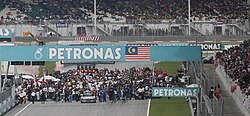
{kind=link}
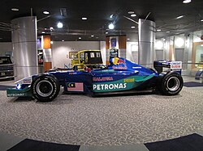
PETRONAS was one of the main sponsors of the BMW Sauber Formula One team alongside Intel, and supplied lubricants and fuel to the team. It also owned 40% of Sauber PETRONAS Engineering, the company that builds chassis which formerly used Ferrari designed engines used by the Sauber team, until being bought out by German motor company BMW. PETRONAS was also the main sponsor for the Malaysian Grand Prix, and co-sponsored the Chinese Grand Prix, and the inaugural Korean Grand Prix. PETRONAS was the exclusive premium partner of the Sauber PETRONAS (1995–2005) and BMW Sauber (2006–2009) F1 teams. BMW had acquired the controlling stake of the former Sauber PETRONAS Engineering, but left the sport after the 2009 season. On 21 December 2009, PETRONAS was confirmed as moving from BMW Sauber to the newly formed Mercedes AMG PETRONAS Formula One team.[280] In terms of further Formula One involvement, every year PETRONAS took the BMW Sauber team to various parts of Malaysia for F1 demos, so the public who are unable to go to the track itself get to experience a little bit of what F1 offers. Other promotional events are held in the run up to the race and the drivers play an integral part in this so much so that Nick Heidfeld conceded that there were more fans for BMW Sauber in Malaysia than in most other countries.
{kind=link}
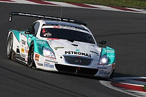
PETRONAS also sponsors many other sporting events and teams, mostly motorsports. Some of these sponsorships include the PERT (PETRONAS EON Rally Team), and also the PETRONAS Adventure Team, a 4X4 adventure team. More recently PETRONAS was also a major sponsor for PETRONAS TOYOTA TEAM TOM'S which was participating in Super GT series, which they won the team title in 2008 and driver title in 2009. The series also raced in Malaysia every season at Sepang International Circuit between 2005 and 2013. PETRONAS signed a three-year sponsorship agreement with Yamaha MotoGP team. The PETRONAS branding can be seen starting Qatar race on the 10 to 12 April 2009. PETRONAS also sponsors all Mercedes-AMG DTM cars from the 2011 season until Mercedes' DTM exit in 2018 (replacing Mobil 1) for only providing the lubricants.
{kind=link}
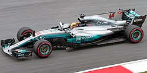
Since 2010, PETRONAS has been the main sponsor of the Mercedes AMG PETRONAS F1 team. Mercedes have won eight straight Constructors' Championship titles and 7 Drivers' Championship titles from the beginning of the 1.6 litre (97.6 cu in) turbocharged V6 engine era in 2014 until 2021. Since 2014, PETRONAS has also been supplying fuel and lubricants for Mercedes-AMG customer teams, including Force India (from 2014) (now known as Aston Martin, along with Ravenol from 2018 season for lubricants only), Lotus for 2015, Manor for 2016, Williams from 2017 to 2022 and McLaren from 2021. PETRONAS' title and technical partnership with Mercedes is extended from the 2026 season onwards.[281]
Motorcycle racing
[edit].jpeg){kind=link}
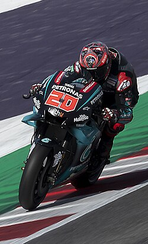
In 1996, PETRONAS sponsored a Grand Prix motorcycle racing team called PETRONAS Sprinta TVK in the 250cc class with Yamaha as the manufacturer. The team got a wildcard opportunity at the Malaysian motorcycle Grand Prix with Shahrol Yuzy as its rider. In the following season in 1997, the team received another wildcard and raced in the 125cc class. This time Honda was chosen as the manufacturer. Then two seasons later, PETRONAS Sprinta TVK returned to the 250cc class. From 2000 to 2002, the team competed for a full season in the 250cc class on Yamaha bikes.[282]
PETRONAS also sponsors the Malaysian Cub Prix races, and the now-defunct Foggy PETRONAS Superbike team (in which PETRONAS debuts their superbike, the FP1). Then, PETRONAS became a team sponsor in the Moto2 championship in the 2011 season called the PETRONAS Malaysia Team with Hafizh Syahrin as the rider and using the Moriwaki motorcycle. Then in the 2012 season, PETRONAS became the sponsor of the Malaysian Raceline Team when he received a wildcard at the Malaysian Sepang Grand Prix with Hafizh Syahrin, who at that time switched to using an FTR motorcycle. It was in this season that Syahrin managed to get on the podium for the first time. The team then got another wildcard in the following season, until in the 2014-2017 season, the team participated in full competition in the season with Kalex as the manufacturer.
Since 2017, PETRONAS has been the main sponsor of the Sepang Racing Team, which at that time competed in the Moto2 and Moto3 classes and was named PETRONAS Sprinta Racing. In the Moto3 class the team uses Honda bikes, while in Moto2 it uses Kalex. At 2019, PETRONAS is the main sponsor of the new PETRONAS Yamaha SRT, which became the satellite team for Yamaha in MotoGP following Tech3's switch to KTM bikes after 20 years with Yamaha bikes. Their riders are Valentino Rossi and 2017 Moto2 World Champion Franco Morbidelli. In addition, PETRONAS also played a role for supplying fuels, motorcycle oil and other products for PETRONAS Yamaha SRT MotoGP team. But unfortunately, at the end of the 2021 season, PETRONAS did not continue its cooperation to become the main sponsor of the SRT team.
In 2022, PETRONAS returned as a team sponsor in Moto2 with their wildcard riders Kasma Daniel in the PETRONAS MIE Racing team and Azroy Anuar with the PETRONAS RW Racing team. Both riders compete in the Malaysian series.
From 2023, PETRONAS became the title sponsor of a World Superbike and World Supersport racing team, MIE Honda Racing and changed its name to PETRONAS MIE Honda Racing Team. Their riders are Hafizh Syahrin & Eric Granado for WSBK category, and Adam Norrodin & Tarran Mackenzie for WSSP category at this season. As part of its corporate social responsibility programme, PETRONAS also brings underprivileged children to watch the races.
Automotive manufacturers
[edit]Petronas once developed its own race bike. Initially, this racing bike will be fielded in the WorldSBK racing event. The desire began in 2002, when Petronas was already a partner of the Sauber racing team in Formula 1. The base used was the Petronas GP1, which was originally prepared to go down in MotoGP. But, it was changed to pass WorldSBK homologation. For its development, Petronas worked with Suter Racing Technology. The Petronas FP1 is ready for mass production, to meet WorldSBK regulations.
Petronas is working with MSX International in the UK to make 75 units of the road version of the FP1. The remaining 75 units are made by Modenas, a Malaysian motorcycle brand. In terms of specifications, this bike is quite powerful. It uses an in-line 3-cylinder engine, DOHC, 4 valves per cylinder, with a capacity of 899.5 cc, and liquid-cooled. The engine produces 127.4 tk of power at 10,000 rpm and 92 Nm of torque at 9,700 rpm.
Petronas had formed the Foggy Petronas Racing team to compete in WorldSBK. The team is led by Carl Fogarty, a former legendary WorldSBK rider. For the riders, Troy Corser, Chris Walker, and Garry McCoy were selected.
However, during the 5 years the team competed in WorldSBK, Petronas FP1 was less competitive. One of the reasons was the change in regulations in 2003. Previously, 3-cylinder engines were limited to 900 cc. But, it was revised to 1,000 cc. Thus, the Petronas FP1 engine was quite defeated in terms of power. It was also not uncommon for the bike to experience technical problems. Even so, the bike made it to the podium three times. One of them was achieved by Walker when he finished third in the 2004 Valencia WorlsSBK. Corser has also achieved pole position twice.
The project was eventually discontinued in 2006 by Fogarty and Petronas. Until now, the road version of the Petronas FP1 has also been a question mark. Because, the motorcycle is difficult to detect its whereabouts now.[283]
WorldSBK constructors
[edit]By season results
[edit](key) (Races in bold indicate pole position; races in italics indicate fastest lap)
| Year | Bike | Team | Tyres | No. | Riders | 1 | 2 | 3 | 4 | 5 | 6 | 7 | 8 | 9 | 10 | 11 | 12 | 13 | 14 | Points | RC | Points | MC | ||||||||||||||
|---|---|---|---|---|---|---|---|---|---|---|---|---|---|---|---|---|---|---|---|---|---|---|---|---|---|---|---|---|---|---|---|---|---|---|---|---|---|
| R1 | R2 | R1 | R2 | R1 | R2 | R1 | R2 | R1 | R2 | R1 | R2 | R1 | R2 | R1 | R2 | R1 | R2 | R1 | R2 | R1 | R2 | R1 | R2 | R1 | R2 | R1 | R2 | ||||||||||
| 2003 | Petronas FP1 | Foggy Petronas Racing | P | 4 | Troy Corser | SPA Ret |
SPA 7 |
AUS 5 |
AUS 8 |
JPN Ret |
JPN 12 |
ITA 13 |
ITA Ret |
GER 12 |
GER 14 |
GBR 16 |
GBR Ret |
SMR 7 |
SMR 10 |
USA 8 |
USA Ret |
GBR Ret |
GBR Ret |
NED 6 |
NED 9 |
ITA 7 |
ITA 7 |
FRA 8 |
FRA Ret |
12th | 107 | 118 | 4th | ||||
| 8 | James Haydon | SPA 12 |
SPA Ret |
AUS 15 |
AUS 16 |
JPN 9 |
JPN Ret |
ITA Ret |
ITA Ret |
GER Ret |
GER DNS |
GBR |
GBR |
SMR |
SMR |
USA Ret |
USA Ret |
GBR 17 |
GBR Ret |
NED DNS |
NED DNS |
ITA Ret |
ITA Ret |
FRA Ret |
FRA Ret |
26th | 12 | ||||||||||
| 2004 | Petronas FP1 | Foggy Petronas Racing | P | 4 | Troy Corser | SPA Ret |
SPA 11 |
AUS 13 |
AUS 5 |
SMR 2 |
SMR 7 |
ITA 9 |
ITA 5 |
GER 4 |
GER Ret |
GBR 7 |
GBR 9 |
USA 10 |
USA Ret |
EUR 5 |
EUR Ret |
NED 10 |
NED 7 |
ITA 12 |
ITA 10 |
FRA Ret |
FRA 7 |
9th | 146 | 200 | 3rd | ||||||
| 9 | Chris Walker | ESP 3 |
ESP 7 |
AUS 10 |
AUS 8 |
SMR 6 |
SMR 13 |
ITA 8 |
ITA 7 |
GER Ret |
GER 7 |
GBR Ret |
GBR 12 |
USA Ret |
USA Ret |
GBR 9 |
GBR 4 |
NED 12 |
NED 10 |
ITA Ret |
ITA 16 |
FRA 8 |
FRA 8 |
11th | 128 | ||||||||||||
| 2005 | Petronas FP1 | Foggy Petronas Racing | P | 24 | Garry McCoy | QAT 17 |
QAT 16 |
AUS Ret |
AUS Ret |
SPA Ret |
SPA Ret |
ITA Ret |
ITA 21 |
EUR Ret |
EUR 13 |
SMR Ret |
SMR Ret |
CZE Ret |
CZE DNS |
GBR 18 |
GBR Ret |
NED 13 |
NED 12 |
GER 11 |
GER Ret |
ITA DNS |
ITA C |
FRA |
FRA |
15 | 22nd | 48 | 6th | ||||
| 99 | Steve Martin | QAT 15 |
QAT Ret |
AUS Ret |
AUS Ret |
SPA Ret |
SPA 17 |
ITA Ret |
ITA Ret |
EUR Ret |
EUR 20 |
SMR 11 |
SMR 8 |
CZE 17 |
CZE 16 |
GBR 15 |
GBR Ret |
NED 14 |
NED 16 |
GER 18 |
GER 9 |
ITA 5 |
ITA C |
FRA Ret |
FRA DNS |
35 | 18th | ||||||||||
| 2006 | Petronas FP1 | Foggy Petronas Racing | P | 18 | Craig Jones | QAT Ret |
QAT Ret |
AUS Ret |
AUS 21 |
SPA 22 |
SPA 25 |
ITA Ret |
ITA Ret |
EUR Ret |
EUR DNS |
SMR 21 |
SMR 21 |
CZE 17 |
CZE 21 |
GBR Ret |
GBR Ret |
NED Ret |
NED Ret |
GER 18 |
GER 13 |
ITA 17 |
ITA Ret |
FRA 17 |
FRA Ret |
27th | 3 | 19 | 6th | ||||
| 99 | Steve Martin | QAT 18 |
QAT 18 |
AUS 14 |
AUS 15 |
SPA Ret |
SPA 15 |
ITA Ret |
ITA Ret |
EUR Ret |
EUR Ret |
SMR Ret |
SMR 17 |
CZE Ret |
CZE 19 |
GBR 17 |
GBR 16 |
NED 12 |
NED 11 |
GER 14 |
GER 12 |
ITA Ret |
ITA 16 |
FRA Ret |
FRA Ret |
21st | 19 | ||||||||||
Education
[edit]{kind=link}
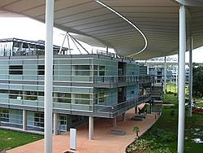
PETRONAS bestows educational sponsorships in the form of convertible loans upon both Malaysian and international students, facilitating their pursuit of higher education at local or overseas universities. Overseeing educational matters is the Sponsorship & Talent Sourcing Unit (STS), an arm of PETRONAS. These sponsorships are granted based on academic accomplishments, extracurricular involvements, family background, and an evaluation of the student's character (assessed through the EduCamp program, mandatory for all aspiring PETRONAS scholars). Upon successful completion of their tertiary studies, scholars absorbed into PETRONAS have their convertible loans transformed into comprehensive scholarships. These scholars are contractually obliged to serve the company for a period of two years for each year of sponsorship. PETRONAS has its own research university, Universiti Teknologi PETRONAS (UTP). Built in 1997, the campus is located in Seri Iskandar, Perak.
Controversies
[edit]War crimes allegations in Sudan
[edit]In June 2010, the European Coalition on Oil in Sudan (ECOS)[284] published the report "Unpaid Debt",[285] that called upon the governments of Sweden, Austria, and Malaysia to look into allegations that PETRONAS, Fida Aziz, Lundin Petroleum, and OMV may have been complicit in the commission of war crimes and crimes against humanity while operating in Block 5A, South Sudan (then Sudan), during the period 1997–2003. The reported crimes include indiscriminate attacks and intentional targeting of civilians, burning of shelters, pillage, destruction of objects necessary for survival, unlawful killing of civilians, rape of women, abduction of children, torture, and forced displacement. When the consortium that PETRONAS took part in operated in Block 5A, approximately 12,000 people died, and 160,000 were violently displaced from their land and homes, many forever. Satellite pictures taken between 1994 and 2003 show that the activities of PETRONAS in Sudan coincided with a spectacular drop in agricultural land use in its concession area.[286]
In June 2010, the Swedish public prosecutor for international crimes opened a criminal investigation into links between Sweden and the reported crimes. In 2016, Lundin Petroleum's Chairman Ian Lundin and CEO Alex Schneiter were informed that they were the suspects of the investigation. Sweden's Government gave the green light for the Public Prosecutor in October 2018 to indict the two top executives[287] On 1 November 2018, and the Swedish Prosecution Authority notified Lundin Petroleum AB that the company might be liable to a corporate fine and forfeiture of economic benefits of SEK 3,285 million (app. €315 million) for involvement in war crimes and crimes against humanity.[288] Consequently, the company itself will also be charged, albeit indirectly, and will be legally represented in court. On 15 November 2018, the suspects were served with the draft charges and the case files.[289] They will be indicted for aiding and abetting international crimes and may face life imprisonment if found guilty.[290] The trial is likely to begin early in 2022 and may take two years.
The Swedish war crimes investigation raises the issue of access to remedy and reparation for victims of human rights violations linked with business activities. In May 2016, representatives of communities in Block 5A claimed their right to remedy and reparation and called upon PETRONAS and its shareholders to pay off their debt to them.[291] A conviction in Sweden may provide some level of remedy and reparation for the few victims of human rights violations who will testify in court, but not for the other 200,000 victims who will not be represented in court. The Swedish court cannot impose obligations upon PETRONAS.
On 23 May 2019, the T.M.C. Asser Institute for International Law in The Hague organised the conference 'Towards criminal liability of corporations for human rights violations: The Lundin case in Sweden'.[292]
The international standard for business and human rights, the UNGP, underlines the duty of business enterprises to contribute to effective remedy of the adverse impact that it has caused or contributed to.[293] The company has never publicly showed an interest in the adverse effects of its activities on the communities in its concession area. According to the Dutch peace organisation PAX, PETRONAS, Lundin Petroleum, OMV, as well as their shareholders are disregarding the human rights standards that they claim to respect, because they, A. never conducted appropriate due diligence for their Sudanese operations; B. made no effort to know their human rights impacts; and C. do not show how they address alleged adverse human rights impacts.[294]
PETRONAS Carigali Overseas Sdn Bhd, a wholly owned subsidiary of PETRONAS Group of Companies, held a 28.5% share in the consortium that acquired the right to explore and develop oil deposits in Block 5A. In 2003, Lundin Petroleum and OMV sold their interest following a public outcry about the role of the consortium in Sudan's oil war. PETRONAS picked up Lundin's 40.375% working interest for a cash payment of US$142.5 million.[295] As the operator of the consortium, Lundin Petroleum was responsible for day-to-day management. Still, it stood under the supervision of the Operating Committee, that exercised "overall direction and control of all matters pertaining to the Joint Operations and the Joint Property". PETRONAS was permanently represented in the Operating Committee and has never publicly distanced itself from any of its decisions.[296]
PETRONAS has never publicly responded to the allegations of negative impacts in Sudan or discussed the issue with local communities. The company is not known to have taken adequate measures to prevent involvement in human rights violations during the oil war or to undo the adverse impacts of its consortium's operations.
PETRONAS was a loyal participant in the consortium that operated in Block 5A and had a substantial say in the way it operated. Therefore, the suspicions against the consortium's top managers also concern PETRONAS. The company is wholly owned by the Malaysian State. According to the UN Guiding Principles, abuse of human rights by a business enterprise that is wholly or partially controlled by a State, may entail a violation of that State's own international law obligations.[297]
In early October 2021, the Sudanese transitional government made moves to confiscate PETRONAS' assets, alleging that they had been acquired through illegal means under the rule of ousted Sudanese President Omar al-Bashir.[298] On 11 October, the Sudanese transitional government issued an arrest warrant for PETRONAS's country manager.[299] In response, the Malaysian Government summoned the Sudanese charge d'affaires and urged the Sudanese government to honour the Bilateral Investment Promotion and Protection Treaty and to respect the sanctity of the Malaysian Embassy, which was housed in the same complex as the PETRONAS Sudan Complex in Khartoum. PETRONAS has also sought to cancel the manager's arrest warrant and submitted a request for arbitration at the World Bank's International Centre for Settlement of Investment Disputes (ICSID).[300][301][302] Middle East Monitor contributor Nasim Ahmed opined that the Sudanese government's actions against Malaysian, Turkish, Qatari and Chinese companies were part of a foreign policy shift to court Western investors.[303] Former federal counsel and University of Technology Malaysia visiting professor Salleh Buang opined that the Sudanese government's actions violated international law on the undue expropriation of commercial assets without adequate compensation, citing the 1927 Chorzów Factory case.[304]
2022 seizure of Luxembourg assets
[edit]In February 2022, a French arbitration court known as the Tribunal de grande instance de Paris ordered the Malaysian Government to pay at least US$14.9 billion (RM 62.59 billion) to the descendants of the Sultanate of Sulu, who have laid claim to the Malaysian state of Sabah. To enforce the award, the claimants filed a saisie-arret (seize order) on 11 July 2022 for Luxembourg authorities to seize two Luxembourg-based subsidiaries of PETRONAS: PETRONAS Azerbaijan (Shah Deniz) and PETRONAS South Caucasus units. The descendants' territorial claim to Sabah dated back to an 1878 agreement between Baron Gustav Overbeck and Alfred Dent of the British North Borneo Company and the-then Sultan of Sulu Jamal Al Alam of Sulu. While the British and Malaysian Governments claimed that the Sultan had permanently ceded North Borneo, the descendants of the Sultan and the Philippines Government have contended that the Sultan had merely leased the territory. Until 2013, the Malaysian Government had paid eight claimants to the Sultanate of Sulu an annual rent of RM5,300. Following the 2013 Lahad Datu standoff, the Malaysian Government had terminated the annual stipends; prompting these descendants to pursue legal action.[305][306][307]
On 13 July, the Malaysian Government obtained a stay on the French court's ruling, with Prime Minister Ismail Sabri Yaakob stating that the ruling undermined Malaysian sovereignty. In addition, PETRONAS described the seize order as "baseless" and stated it would contest the enforcement actions. It also stated that the two affected subsidiaries had already divested their assets in Azerbaijan and repatriated all their proceeds.[307][308][309] On 18 July, Malaysian opposition politicians unsuccessfully demanded a debate on the seizure order against PETRONAS' assets in the Malaysian Parliament but were blocked by the Speaker of the House on procedural grounds. Law Minister Wan Junaidi Tuanku Jaafar stated that the stay would prevent the final award from being enforced in any county until a final decision by the French court regarding the Malaysian government's application that the February court ruling be cancelled. By contrast, lawyers representing the Sultanate of Sulu claimants contended that the stay on the award was only valid in France and remained enforceable in other international jurisdictions, citing a United Nations treaty on international arbitration.[306][310]
In September 2022, the heirs asked the Hague Court of Appeal to recognise and enforce the award in the Netherlands, and allow them to seize Malaysian assets to this end.[311] They attempted to do the same in France and Luxembourg.[312]
In January 2023, a Luxembourg court reportedly set aside the heirs' request to enforce the $15 billion arbitration award.[313] However, shortly after, a Luxembourg district court issued new orders to seize holdings and assets belonging to Petronas in mid-February.[314] Petronas has two holding companies in Luxembourg called Petronas Azerbaijan and Petronas South Caucasus which are related to the state-owned oil company's activities around the Caspian sea.[314] Petronas confirmed the new seizure order for the two units and their parent company, but reiterated the heirs' actions were baseless and that the company will continue to defend its legal position.[315]
On 14 March, the Paris Court of Appeal ruled that Sulu claimants' challenge to a stay order filed by Malaysia last year was "inadmissible".[314] The court handed another "decisive victory" to Malaysia on 4 June, when it found that the arbitral tribunal that had heard the petition filed by the Sulu heirs did not have jurisdiction over the case.[316] According to the Malaysian Law Minister, this judgement implied that the Paris Court of Appeal will also annul the $14.9 billion award handed down earlier.[316] On the other hand, the claimants said they would now consider their options before the French Supreme Court.[316]
On 27 June, Malaysia won another legal victory, with the Hague Court of Appeal dismissing a bid to enforce the $15 billion award.[317] According to Reuters, the Dutch judges sided with Malaysia, saying the original pact lacked a clause binding parties to arbitration and the French stay meant the claim was not enforceable in the Netherlands.[317] While lawyer Paul Cohen, acting for the Sulu heirs, said they were disappointed with the court decision, Malaysia's Prime Minister, Anwar Ibrahim, welcomed the decision, stating, "Malaysia trusts that today's decision ... will put an end to the frivolous attempts of the claimants to enforce the purported final award in other jurisdiction".[317]
On 8 January 2023, it was announced that Gonzalo Stampa, the Spanish arbitrator who had awarded the arbitral sum against Malaysia, had been convicted of contempt of court for "knowingly disobeying rulings and orders from the Madrid High Court of Justice", and sentenced to six months in prison.[318]
According to Law360, the Spanish courts' decision to move ahead with criminal proceedings against Stampa is a significant "victory for the Malaysian government".[319]
On 5 January 2024, Stampa was convicted for contempt of court.[320] He was sentenced to six months in prison and banned from acting as an arbitrator for one year for "knowingly disobeying rulings and orders from the Madrid High Court of Justice".[321]
On 17 May 2024 the Madrid Court of Appeal upheld the contempt of court conviction and sentence against Stampa, upholding his six-month prison sentence, and a one-year ban from practising as an arbitrator.[322]
On 30 May 2024, Petronas moved a Manhattan court to seek directions for litigation funding firm Therium and its parent company to turn over subpoenaed financial documents and communications. Petronas' Azerbaijani arm said it would sue the companies and their lawyers in Spain over losses from the seizure of assets in Luxembourg.[323]
On 7 November 2024, the French Court of Cassation—the highest court in the French judicial system—annulled a $15 billion arbitration ruling against Malaysia.[324] This decision marked a significant legal victory for Malaysia and reinforced its sovereignty in a dispute with the self-proclaimed Sulu heirs.[324] The ruling highlighted irregularities in the arbitration process led by Gonzalo Stampa and raised concerns about practices such as forum shopping and unregulated litigation funding in European courts.[325][326]
The French court's decision was deemed a significant "win" for Malaysia that effectively marked the end of the Sulu case by several publications, including Law.com and Law360.[326][327] Keith Ellison, former vice-chairman of the Democratic National Committee and Minnesota attorney general, pointed out that the case highlighted the enormous scope for "corruption," irresponsible profiteering, and foreign influence operations to subvert arbitration proceedings".[328]
See also
[edit]Notes
[edit]- ↑ lit. 'National Petroleum Limited', petroliam is a Malay variant form of petroleum before the 1972 spelling reform was widespread
References
[edit]- ↑ "Petronas celebrates a milestone". The Sun Daily. 6 August 2019. Retrieved 2 June 2020.
- ↑ "PETRONAS Bids Farewell To Tan Sri Wan Zulkiflee As Its President & Group CEO; Welcomes The Appointment Of Tengku Muhammad Taufik As The New PETRONAS' President & Group CEO". PETRONAS. Retrieved 7 July 2020.
- ↑ "Petronas records higher net profit for FY16, to pay out RM13b in dividend to govt: CEO". New Straits Times. 14 March 2017. Retrieved 8 May 2017.
- ↑ "Petronas posts RM3.4 billion net loss in Q3 on assets impairment". New Straits Times. 27 November 2020. Retrieved 8 May 2021.
- ↑ "Global Directory". Petronas. Retrieved 12 May 2024.
- ↑ Roziana Hamsawi (27 September 2005). "Fast-tracking Malaysia's oil and gas development". Business Times.[page needed]
- ↑ Roziana Hamsawi (30 June 2001). "Petronas finds rich vein overseas". New Straits Times.[page needed]
- ↑ "Petronas a full-fledged conglomerate". Business Times. 27 June 2001.[page needed]
- ↑ Nur Alwani Zafirah Khairul (12 March 2025). "Petronas syarikat minyak milik rakyat" (in Malay). Harian Metro.[page needed]
- Jump up to: 1 2 Yeoh Guan Jin (17 August 2024). "Petronas marks 5 decades equalising wealth across the nation". Free Malaysia Today. Retrieved 6 May 2025.
- ↑ Shazni Ong (14 October 2020). "Petronas' strong balance sheet to compensate for weak oil prices". The Malaysian Reserve. Retrieved 6 May 2021.
- ↑ "PETRONAS". World Benchmarking Alliance. Retrieved 25 May 2025.
- ↑ "PETRONAS Activity Outlook 2024–2026" (PDF). Petronas. Retrieved 25 May 2024.
- ↑ "Overview of Production in Malaysia". Petronas. Retrieved 25 May 2024.
- ↑ Jov Onsat (27 February 2025). "Petronas Posts Lower Annual Profit as Weaker Prices Offset Sales Increase". Rigzone. Retrieved 25 May 2025.
- ↑ "PETRONAS Lubricants International". Petronas. Retrieved 25 May 2024.
- ↑ Nair, Nevash (14 February 2013). "A talent crisis looms in the oil and gas industry". The Star Online. Retrieved 31 May 2016.
- Jump up to: 1 2 "Boosting investment in Malaysia's upstream sector". The Edge Malaysia. 13 January 2025. Retrieved 25 May 2025.
- ↑ "Bentley Infrastructure 500 Top Owners". Bentley. Retrieved 15 January 2022.
- Jump up to: 1 2 Carola Hoyos (11 March 2007). "The new Seven Sisters: oil and gas giants dwarf western rivals". Financial Times. Retrieved 6 May 2015.
- ↑ "Rating report: Petroliam Nasional Berhad (PETRONAS)". Fitch Ratings. 11 December 2020. Retrieved 6 May 2021.
- ↑ "Top 100 producers and their cumulative greenhouse gas emissions from 1988-2015". The Guardian. Retrieved 29 October 2020.
- ↑ "IPCC, 2018: Summary for Policymakers" (PDF). Intergovernmental Panel on Climate Change. Archived from the original (PDF) on 23 July 2021. Retrieved 29 October 2020.
- ↑ "Petronas rai 50 tahun, kongsi kekayaan negara sepanjang lima dekad" (in Malay). Berita Harian. 27 August 2024. Retrieved 6 May 2025.
- ↑ "Melakar 50 tahun masa depan bersama" (in Malay). Berita Harian. 16 September 2024. Retrieved 6 May 2025.
- ↑ Sorkhabi, Rasoul. "Historical Highlight: Miri Field Seeps Helped, But Success Was a Higher Calling". American Association of Petroleum Geologists (AAPG). Archived from the original on 24 March 2015. Retrieved 24 March 2015.
- ↑ Sorkhabi, Rasoul (2010). History of oil: Sarawak - Miri 1910. GEO ExPro Magazine Vol 7, No 2. p. 44. Archived from the original on 24 March 2015. Retrieved 24 March 2015.
{{cite book}}:|work=ignored (help) - Jump up to: 1 2 3 4 5 6 Dr Fred R, von der Mehden; Al, Troner (March 2007). Petronas: a national oil company with an international vision (PDF). James A Baker III Institute for public policy, Rice university. Archived from the original (PDF) on 16 May 2017. Retrieved 16 May 2018.
- ↑ The Malaysian Oil and Gas Infustry: Challenging times, but fundamentals intact (PDF). Price Waterhouse Coopers. May 2016. Archived from the original on 5 July 2017. Retrieved 17 May 2018.
{{cite book}}: CS1 maint: bot: original URL status unknown (link) - Jump up to: 1 2 Report on Malaysia oil and gas exploration and production. Bank Pembangunan. 2011. p. 60. Archived from the original on 11 April 2017. Retrieved 17 May 2018.
- ↑ Lashvinder Kaur (23 August 1995). "Petronas poised to play a bigger global role". Business Times. Retrieved 17 May 2020.
- Jump up to: 1 2 3 Petronas 2024, p. 19.
- ↑ Lau, Leslie (14 March 2010). "Ex-Sarawak CM says Kelantan has no right to oil royalty". The Malaysian Insider. Archived from the original on 14 March 2010. Retrieved 9 May 2015.
- ↑ Mokhtar 1981, p. 84.
- Jump up to: 1 2 3 Ranjit 1986, p. 121: "When Taib became Minister of Land and Mines, he showed considerable interest in the development of this resource, and in his view, there should be a sharing of royalties between the State (i.e. Sarawak) and the federal government".
- ↑ Ranjit 1986, p. 122: "Tengku Razaleigh visited Datuk Rahman, ... I suggested the formation of a company, not a statutory corporation, which would distribute profits equally between the Federal government and Sarawak in the form of cash payments. He accepted the proposal and I rushed back to Tun Razak with the news".
- ↑ Ranjit 1986, p. 123: "The proceeds would accrue to Petronas, but 5 percent of the oil revenue thereafter would go to the state, and a similar amount to the Federal government. Rahman agreed".
- Jump up to: 1 2 3 4 Petronas 2024, p. 20.
- ↑ "Petronas milestones". Business Times. 27 June 2001. Retrieved 17 May 2020.
- ↑ Isa Nikmat (5 March 1993). "Penggerak wawasan gas" (in Malay). Berita Harian. Retrieved 17 May 2020.
- Jump up to: 1 2 3 4 5 6 7 8 "PETRONAS MILESTONES 1974 - 2005". New Straits Times. 27 September 2005. Retrieved 17 May 2020.
- ↑ "Razaleigh gets key post in Petronas". The Straits Times. 7 September 1974. p. 8. Retrieved 11 June 2020.
- ↑ Shakira Buang (21 May 2024). "Ku Li: Petronas ditubuhkan atas kehendak orang Sarawak sendiri" (in Malay). Malaysiakini. Retrieved 15 May 2025.
- ↑ Sherell Jeffrey; James Sarda (15 July 2024). "How Petronas came about". Daily Express Malaysia. Retrieved 15 May 2025.
- ↑ Chamil Wariya (1 October 1974). "Kawasan minyak milik Petronas: Syarikat yang meneroka akan menjadi kontrektor — Razaleigh". Utusan Malaysia (in Malay). Retrieved 15 May 2024.
- ↑ "Petronas rangka perusahaan petro kimia RM300 juta". Utusan Malaysia (in Malay). 29 October 1974. Retrieved 15 May 2024.
- Jump up to: 1 2 "The firms that must sell shares to". The Straits Times. 19 April 1975. p. 10. Retrieved 20 May 2020.
- ↑ "Bid to nullify the oil royalty deal". Daily Express. 26 September 2012. Archived from the original on 28 October 2012. Retrieved 30 May 2015.
- ↑ "Petronas takes over control of oil company". The Business Times. 26 October 1976. p. 12. Retrieved 18 May 2020.
- ↑ Petronas 2024, p. 25.
- ↑ "Petronas bekalkan 8—10 ribu tong tiap hari: Minyak kita ke Manila". Utusan Malaysia (in Malay). 11 June 1976. Retrieved 15 May 2024.
- ↑ "Petronas in aviation". The Business Times. 27 November 1976. p. 13. Retrieved 15 May 2020.
- ↑ "Petronas joint venture". The Straits Times. 1 April 1978. p. 13. Retrieved 23 May 2020.
- ↑ "First crude export from Terengganu". The Business Times. 4 May 1978. p. 1. Retrieved 18 May 2020.
- ↑ "PETRONAS' FIRST SHIPMENT OF CRUDE TO U.S." The Straits Times. 4 May 1978. p. 22. Retrieved 22 May 2020.
- ↑ "Petronas eksport minyak mentah pertama dari Terengganu". Utusan Malaysia (in Malay). 4 May 1978. Retrieved 15 May 2021.
- ↑ "Pelantar carigali minyak Petronas, Esso berjalan". Utusan Malaysia (in Malay). 2 July 1978. Retrieved 15 May 2025.
- ↑ "Petronas pemegang saham: Untuk laksanakan projek urea ASEAN bagi Malaysia". Utusan Malaysia (in Malay). 18 July 1979. Retrieved 15 May 2025.
- ↑ "About us - milestones". Petronas. Archived from the original on 30 August 2018. Retrieved 30 August 2018.
- ↑ "Petronas production sharing agreement". The Business Times. 6 May 1980. p. 3. Retrieved 15 May 2020.
- ↑ "Petronas may step in to supply more LPG". The Business Times. 11 July 1980. p. 2. Retrieved 22 May 2020.
- ↑ "Petronas Carigali akan bina lima pelantar di lapangan Duyung dan Sotong". Utusan Malaysia (in Malay). 21 June 1982. Retrieved 15 May 2024.
- ↑ "Petronas signs gas deal with Esso". New Nation. 6 November 1982. p. 13. Retrieved 18 May 2020.
- ↑ "Toh Puan Suhailah rasmi pelancaran Parameswara" (in Malay). Berita Harian. 16 January 1983. p. 8. Retrieved 18 May 2020.
- ↑ "Kapal penggerudi pertama milik PETRONAS bernilai RM70 juta dilancar di Singapura esok". Utusan Malaysia (in Malay). 14 January 1983. Retrieved 15 May 2025.
- ↑ "Lagi bekalan LPG M'sia untuk S'pura" (in Malay). Berita Harian. 19 January 1983. p. 8. Retrieved 18 May 2020.
- ↑ "Petronas sets up drilling subsidiary". The Straits Times. 21 November 1983. p. 13. Retrieved 15 May 2020.
- ↑ "Petronas' big jump in its share of market". New Straits Times. 12 September 1983. Retrieved 17 May 2020.
- ↑ "Glut of office space in KL". The Straits Times. 11 May 1984. p. 15. Retrieved 9 May 2020.
- ↑ "Petronas to buy Dayabumi building". The Business Times. 15 April 1988. p. 18. Retrieved 15 May 2020.
- ↑ "Petronas buys Dayabumi complex for $343m". The Straits Times. 27 July 1988. p. 21. Retrieved 15 May 2020.
- ↑ "Petronas sells stake". The Straits Times. 26 November 1985. p. 19. Retrieved 18 May 2020.
- ↑ "Petronas signs 16th oil exploration pact". The Straits Times. 11 June 1988. p. 28. Retrieved 20 May 2020.
- ↑ "Petronas breaks new ground with pact on oil production". The Straits Times. 25 March 1989. p. 21. Retrieved 30 May 2020.
- ↑ "Petronas close to oil pacts with Vietnam, Myanmar". The Business Times. 1 March 1990. p. 24. Retrieved 20 May 2020.
- ↑ Risen Jayaseelan (16 August 1999). "Well-spring of hope". Malaysian Businesses. Retrieved 18 May 2020.
- ↑ Faridah Yaacob (16 October 1995). "Global goal". Malaysian Businesses. Retrieved 17 May 2020.
- ↑ "Petronas to offer deep-water deals". The Straits Times. 5 February 1991. p. 36. Retrieved 22 May 2020.
- ↑ "Petronas to offer new sites for exploration". The Business Times. 5 February 1991. p. 28. Retrieved 22 May 2020.
- ↑ "Petronas to check quality of new crude". The Straits Times. 14 August 1991. p. 34. Retrieved 22 May 2020.
- ↑ "Petronas refining new Dulang crude to check its quality". The Business Times. 14 August 1991. p. 24. Retrieved 22 May 2020.
- ↑ "Petronas to explore for oil off Viet coast". The Business Times. 11 September 1991. p. 4. Retrieved 15 May 2020.
- ↑ "Bangkok, KL sign crude deal". The Business Times. 24 September 1991. p. 7. Retrieved 22 May 2020.
- ↑ "Petronas buys stakes in two Chinese oil blocks". The Business Times. 29 October 1991. p. 3. Retrieved 20 May 2020.
- ↑ "Two more platforms for Petronas". The Business Times. 28 January 1992. p. 6. Retrieved 29 May 2020.
- ↑ "Petronas secures $311m loan for gas project". The Straits Times. 17 February 1992. p. 32. Retrieved 21 May 2020.
- ↑ "Petronas enters deal for gas utility company". The Straits Times. 31 March 1992. p. 36. Retrieved 26 May 2020.
- ↑ "Petronas seeks lower fees in Singapore". The Straits Times. 8 May 1992. p. 44. Retrieved 22 May 2020.
- ↑ "Petronas unit raises US$139m loan to help finance tankers". The Business Times. 12 May 1992. p. 4. Retrieved 21 May 2020.
- ↑ "Petronas gets US$139m loan for LNG tankers". The Business Times. 12 May 1992. p. 52. Retrieved 21 May 2020.
- ↑ "Petronas 'renews deals with Mobil and Shell'". The Straits Times. 9 July 1992. p. 39. Retrieved 22 May 2020.
- ↑ "Petronas-Novacorp venture". The Straits Times. 11 September 1992. p. 47. Retrieved 23 May 2020.
- ↑ "Petronas, Conoco negotiating deal on M'sian oil refinery". The Business Times. 2 February 1993. p. 10. Retrieved 20 May 2020.
- ↑ "Petronas and Conoco to jointly develop oil refinery in Malacca". The Business Times. 4 May 1993. p. 3. Retrieved 20 May 2020.
- ↑ "Petronas to stop processing crude in S'pore?". The Business Times. 30 June 1993. p. 3. Retrieved 22 May 2020.
- ↑ "Petronas reduces crude oil processing in Singapore". The Business Times. 13 August 1993. p. 14. Retrieved 22 May 2020.
- ↑ "Petronas cuts term crude processing in Singapore". The Straits Times. 13 August 1993. p. 47. Retrieved 22 May 2020.
- ↑ "Petronas signs on Mitsubishi". The Business Times. 8 September 1993. p. 48. Retrieved 23 May 2020.
- ↑ "Tenaga and Petronas sign power agreement". New Straits Times. 1 October 1993. Retrieved 22 May 2020.
- ↑ "Petronas, Shell to develop gas fields". The Business Times. 7 October 1993. p. 16. Retrieved 29 May 2020.
- ↑ "Petronas refinery receives first shipment of crude oil". New Straits Times. 17 February 1994. Retrieved 22 May 2020.
- ↑ "Loji mula operasi bulan depan" (in Malay). Berita Harian. 18 February 1994. Retrieved 22 May 2020.
- ↑ "Petronas finalising selection of partner for RM4b refinery". New Straits Times. 25 May 1994. Retrieved 22 May 2020.
- ↑ "Malaysia to start up new oil refinery this week". The Business Times. 26 April 1994. p. 3. Retrieved 22 May 2020.
- ↑ "Petronas gets 11b yen loan". The Business Times. 24 August 1993. p. 12. Retrieved 21 May 2020.
- ↑ "Petronas signs LNG deal with Japan's Tohoku". The Business Times. 28 July 1994. p. 22. Retrieved 27 May 2020.
- ↑ "Petronas shuts down oil production at Tapis for routine maintenance". The Business Times. 31 August 1994. p. 22. Retrieved 22 May 2020.
- ↑ "Petronas and Mobil team up to explore for oil". The Business Times. 2 November 1994. p. 16. Retrieved 20 May 2020.
- ↑ "Petronas, Conoco sign pact to build refinery". The Business Times. 10 November 1994. p. 3. Retrieved 18 May 2020.
- ↑ "Petronas enters deal for second refinery". The Straits Times. 10 November 1994. p. 34. Retrieved 18 May 2020.
- ↑ "Petronas to list more of its subsidiaries on KLSE". The Straits Times. 8 February 1994. p. 31. Retrieved 18 May 2020.
- ↑ "Petronas Gas to be listed on KLSE in June". The Business Times. 29 November 1994. p. 20. Retrieved 18 May 2020.
- ↑ "Petronas in China joint-venture deal". Business Times. 29 July 1995. Retrieved 17 May 2020.
- ↑ "Petronas to build LPG complex in China". New Straits Times. 29 July 1995. Retrieved 17 May 2020.
- ↑ "Petronas signs Sarawak gas supply accord". The Business Times. 3 August 1995. p. 16. Retrieved 27 May 2020.
- ↑ "Petronas expanding outside S-EA, strikes oil in Syria". The Business Times. 14 September 1995. p. 20. Retrieved 20 May 2020.
- ↑ "Petronas to sold LNG to Japan". The Business Times. 16 November 1995. p. 24. Retrieved 23 May 2020.
- ↑ "Petronas signs deal for LNG plant". The Business Times. 9 December 1995. p. 9. Retrieved 27 May 2020.
- ↑ "Petronas signs gas plant deal with three other firms". The Straits Times. 9 December 1995. p. 47. Retrieved 27 May 2020.
- ↑ Hardev Kaur (9 March 1996). "Viet master plan: Petronas helps out". Business Times. Retrieved 17 May 2020.
- ↑ "Petronas signs deal for joint venture in Guangdong". New Straits Times. 16 April 1996. Retrieved 17 May 2020.
- ↑ "Petronas in China LPG bottling plant bid". Business Times. 16 April 1996. Retrieved 17 May 2020.
- ↑ "Pact over aromatics project sealed". New Straits Times. 10 May 1996. Retrieved 17 May 2020.
- Jump up to: 1 2 "Aromatics complex to be built". New Straits Times. 4 September 1997. Retrieved 17 May 2020.
- ↑ "Petronas buys 30pc of S. African oil company". Business Times. 15 June 1996. Retrieved 18 May 2020.
- ↑ Kasmiah Mustapa (15 June 1996). "Petronas buys stake in major Pretoria oil firm". New Straits Times. Retrieved 18 May 2020.
- ↑ "Petronas: Engen stake a business partnership". Business Times. 18 June 1996. Retrieved 18 May 2020.
- ↑ "Imej baru" (in Malay). Harian Metro. 16 September 1992. Retrieved 17 May 2020.
- ↑ Cheng Lee Shuang (26 February 1997). "Petronas' sweet success overseas". New Straits Times. Retrieved 17 May 2020.
- ↑ "Petronas-BASF deal to set up petrochem plants". Business Times. 22 January 1997. Retrieved 17 May 2020.
- ↑ "Petronas and BASF to build three new plants". New Straits Times. 22 January 1997. Retrieved 17 May 2020.
- ↑ "Petronas and BP in acetic acid project". New Straits Times. 26 February 1997. Retrieved 17 May 2020.
- ↑ "Petronas, BP to invest in Kuantan acetic acid plant". Business Times. 26 February 1997. Retrieved 17 May 2020.
- ↑ "Petronas offers incentive to help boost oil exploration". The Business Times. 21 March 1997. p. 21. Retrieved 20 May 2020.
- ↑ "First Petronas joint LPG project opens in China". New Straits Times. 29 March 1997. Retrieved 17 May 2020.
- ↑ "Petronas opens LPG venture in China". Business Times. 29 March 1997. Retrieved 17 May 2020.
- ↑ "(Petronas)". Business Times. 11 August 1997. Retrieved 17 May 2020.
- ↑ Ng Poh Ling (1 August 1997). "German label, Malaysian labour". Malaysian Businesses. Retrieved 17 May 2020.
- ↑ Hamisah Hamid (9 August 1997). "Petronas, BASF sign US$700m deal (HL)". Malaysian Businesses. Retrieved 17 May 2020.
- ↑ "Petronas signs deal for petrochemical complex in Pahang". New Straits Times. 9 August 1997. Retrieved 17 May 2020.
- ↑ "Toyo-led group bags aromatics complex contract". Business Times. 4 September 1997. Retrieved 17 May 2020.
- ↑ "Petronas buys big piece of MISC". Investor's Digest. 16 September 1997. Retrieved 17 May 2020.
- ↑ "Petronas to use gas unit shares' to buy shipper". The Straits Times. 28 August 1997. p. 59. Retrieved 18 May 2020.
- ↑ "Petronas buys 29.3% stake in MISC". The Straits Times. 25 August 1997. p. 45. Retrieved 18 May 2020.
- ↑ "Petronas' 29.3% MISC stake comes from M$1.63b share swap". The Business Times. 17 September 1997. p. 18. Retrieved 18 May 2020.
- ↑ "MISC share structure still undecided". Business Times. 13 March 1998. Retrieved 18 May 2020.
- ↑ "Petronas buys shipping arm of ailing Konsortium". The Business Times. 7 March 1998. p. 1. Retrieved 18 May 2020.
- ↑ Saufi Hamzah (3 October 1999). "Kereta rasmi guna enjin E01" (in Malay). Berita Minggu. Retrieved 18 May 2020.
- ↑ "Petronas adjusts crude oil pricing system". The Business Times. 13 March 1998. p. 22. Retrieved 22 May 2020.
- ↑ "Petronas, Sasol of S. Africa may form new firm". Business Times. 15 March 1999. Retrieved 18 May 2020.
- ↑ "History, wonders of science at Petrosains". Business Times. 2 April 1999. Retrieved 18 May 2020.
- ↑ "Latest education-cum-entertainment hub". New Straits Times. 2 April 1999. Retrieved 18 May 2020.
- ↑ Azura Yahya (12 April 1999). "Galeri sains petroleum" (in Malay). Berita Harian. Retrieved 18 May 2020.
- ↑ Adeline Ong (7 July 1999). "Petronas to diversify into non-traditional markets". Business Times. Retrieved 18 May 2020.
- ↑ "Petronas in deal with Brunei's SKBB". The Business Times. 8 December 1999. p. 14. Retrieved 22 May 2020.
- ↑ "Petronas to buy into Chad oilfield". The Straits Times. 29 March 2000. p. 75. Retrieved 4 June 2020.
- ↑ "Petronas discovers oil off Sabah state". The Business Times. 20 July 2000. p. 16. Retrieved 22 May 2020.
- ↑ "M'sian, Indon state firms sign oil and gas deals". The Business Times. 6 October 2000. p. 13. Retrieved 9 June 2020.
- ↑ "Petronas to drive LNG cars in Thailand". The Business Times. 2 June 2001. p. 9. Retrieved 4 June 2020.
- ↑ "Petronas makes first gas discovery in Pakistan". Business Times. 6 September 2001. Retrieved 4 June 2020.
- ↑ "Petronas makes first gas discovery in Pakistan". New Straits Times. 6 September 2001. Retrieved 4 June 2020.
- ↑ "Petronas eyes S'pore Refining". The Business Times. 9 November 2001. p. 11. Retrieved 9 June 2020.
- ↑ "Petronas plans to buy BP stake". Today. 9 November 2001. p. 18. Retrieved 9 June 2020.
- ↑ Kamarul Yunus (27 June 2002). "Petronas shows resilience with RM24.3b pre-tax". Business Times. Retrieved 4 June 2020.
- ↑ "Petronas may sell rest of Proton stake". The Business Times. 16 April 2002. p. 12. Retrieved 9 June 2020.
- ↑ "Petronas signs pact with Manila on gas-powered cars". The Business Times. 8 May 2002. p. 11. Retrieved 4 June 2020.
- ↑ "Petronas keen on S'pore Refining stake". The Straits Times. 11 June 2002. p. 18. Retrieved 9 June 2020.
- ↑ "Petronas wants to buy BP's SRC stake". Today. 11 June 2002. p. 10. Retrieved 9 June 2020.
- ↑ "Petronas discovers oil in Caspian Sea". The Business Times. 20 September 2002. p. 11. Retrieved 22 May 2020.
- ↑ "Mystery buyer foils Petronas' bid to delist S. Africa oil firm". The Straits Times. 6 November 2002. p. 16. Retrieved 4 June 2020.
- ↑ "The truth is out there somewhere". Malaysia Today. 2 February 2005. Retrieved 10 June 2020.
- ↑ "Petronas in Manila oil drilling JV". The Business Times. 21 January 2004. p. 11. Retrieved 9 June 2020.
- ↑ "State should control Petronas even if units privatised". The Business Times. 3 November 2004. p. 13. Retrieved 9 June 2020.
- ↑ "More Petronas listings". Streats. 3 November 2004. p. 6. Retrieved 9 June 2020.
- ↑ "Petronas-Chevron joint venture". The Business Times. 3 May 2006. p. 12. Retrieved 10 June 2025.
- ↑ "Petronas in 25-year LNG deal with China". The Business Times. 31 October 2006. p. 17. Retrieved 11 June 2020.
- ↑ "Malaysia to supply LNG to Chinese for 25 years". The New York Times. 30 October 2006. Retrieved 11 June 2020.
- ↑ "Petronas agrees to buy FL Selenia from KKR". The Business Times. 22 September 2007. p. 8. Retrieved 11 June 2020.
- ↑ "Petronas to offer £207m for Star Energy". The Business Times. 16 November 2007. p. 18. Retrieved 9 June 2020.
- ↑ "Petronas eyes Star Energy". NS Energy. 15 November 2007. Retrieved 9 June 2017.
- ↑ "Acquistion Transforms IGas". Natural Gas World. 20 September 2011. Retrieved 10 June 2020.
- ↑ "IGas Energy to acquire Star Energy Group". Offshore Technology. 20 September 2011. Retrieved 10 June 2020.
- ↑ "Malaysia's Petronas to sell Star Energy to IGas Energy". Reuters. 19 September 2011. Retrieved 10 June 2020.
- ↑ Joseph Chin (16 July 2008). "Petronas to focus on overseas ops". The Star Online. Retrieved 16 July 2008.
- ↑ "Petronas signs $418-million deal for Mauritania assets". Offshore Magazine. 27 August 2007. Retrieved 15 July 2008.
{{cite news}}: CS1 maint: deprecated archival service (link) - ↑ "Petronas and partners strike oil and gas in Mauritania". The Star Online. 8 May 2008. Archived from the original on 8 December 2008. Retrieved 15 July 2008.
- ↑ "Petronas buys BP stakes in 2 petrochemical plants". The Business Times. 2 September 2010. p. 4. Retrieved 11 June 2020.
- ↑ "Petronas signs two deals to distribute Sabah natural gas". The Business Times. 27 July 2011. p. 14. Retrieved 10 June 2020.
- ↑ "Petronas inks gas supply deals from Kebabangan". The Edge Malaysia. 26 July 2011. Retrieved 10 June 2020.
- Jump up to: 1 2 "Malaysia's Petronas discovers gas in offshore Sabah". Reuters. 28 July 2011. Retrieved 10 June 2020.
- ↑ "Major gas reserves found off Sabah coast". Malaysiakini. 28 July 2011. Retrieved 10 June 2020.
- ↑ "Petronas Hits On Two Gas Finds Offshore Sabah". Maritime Executive. 28 July 2011. Retrieved 10 June 2020.
- ↑ "Petronas carigali discovers gas offshore Sabah". The Borneo Post. 29 July 2011. Retrieved 10 June 2020.
- ↑ "Petronas in talks with Shell, Exxon for tie-up". Today. 24 December 2011. p. 28. Retrieved 10 June 2020.
- ↑ "Petronas in talks with oil majors for tie-up". The Business Times. 24 December 2011. p. 12. Retrieved 10 June 2020.
- ↑ "Petronas acquires Progress Energy Resources in $5.3bn deal". BBC News. 29 June 2012. Retrieved 4 June 2020.
- ↑ Michael J. de la Merced (28 June 2012). "Petronas to buy Progress Energy for $5.35 billion". The New York Times. Retrieved 4 June 2020.
- ↑ "Petronas agrees to renew bid for Canada's Progress: sources". Reuters. 29 October 2012.
- ↑ "Canada approves Cnooc, Petronas bids for Nexen, Progress Energy". The Borneo Post. 10 December 2012. Retrieved 4 June 2020.
- ↑ "Rare move by Petronas to buy petrol from spot market here". The New Paper. 13 November 2012. pp. 18–19. Retrieved 4 June 2020.
- ↑ "Rich oil deposits discovered in Sarawak". Investvine.com. 19 January 2013. Archived from the original on 6 January 2017. Retrieved 19 January 2013.
- ↑ "Petronas cutting its stake in Canada LNG venture to 50%". The Business Times. 26 July 2013. p. 10. Retrieved 11 June 2020.
- ↑ Niluksi Koswanage; Denny Thomas (25 July 2013). "Petronas to cut Canada LNG stake to 50 pct, in talks with Sinopec-sources". Reuters. Retrieved 11 June 2020.
- ↑ "Malaysia's Petronas exiting Venezuela crude project, say sources". Malay Mail. 10 September 2013. Retrieved 11 June 2020.
- ↑ "Petronas exiting Venezuela project after disputes". The Business Times. 11 September 2013. p. 11. Retrieved 11 June 2020.
- ↑ "Petronas confirms withdrawal from Venezuela project". The Edge Malaysia. 10 September 2013. Retrieved 11 June 2020.
- ↑ "Petronas closes $2.25 billion purchase of Statoil's Azerbaijan assets". Petro Global News. 5 May 2015. Archived from the original on 10 May 2015. Retrieved 11 May 2015.
- ↑ "Petronas suffers first-ever loss — $2 billion in Q4". Petro Global News. Retrieved 2 March 2015.[dead link]
- ↑ "Projek LNG diterajui PETRONAS di Kanada bermula September" (in Malay). Berita Harian. 27 July 2015. Retrieved 4 June 2020.
- ↑ "Amid doubts, Petronas renews pledge to deliver on Canadian LNG project". Malay Mail. 9 October 2015. Retrieved 4 June 2020.
- ↑ "Canadian government approves Petronas LNG project". Free Malaysia Today. 28 September 2016. Retrieved 4 June 2020.
- ↑ "Petronas tamatkan perkhidmatan 1000 pekerja" (in Malay). Malaysiakini. 1 March 2016. Retrieved 10 June 2020.
- ↑ Joseph Chin (1 March 2016). "Petronas Kurangkan 1,000 Pekerja" (in Malay). mStar Online. Retrieved 10 June 2020.
- ↑ "Penstrukturan Petronas bakal jejas 1,000 pekerja" (in Malay). Berita Harian Singapura. 3 March 2016. Retrieved 10 June 2020.
- ↑ "PETRONAS and Pavilion Energy Inks MOU for LNG Collaborations" (Press Release). Petronas. 31 March 2017. Retrieved 11 June 2020.
- ↑ "Petronas, Pavilion Energy to collaborate on LNG supply and trading". The Edge Malaysia. 31 March 2017. Retrieved 11 June 2020.
- ↑ "PETRONAS, Pavilion Gas S'pura teroka perniagaan LNG" (in Malay). Berita Harian. 31 March 2017. Retrieved 11 June 2020.
- ↑ "PETRONAS' FIRST FLOATING LNG FACILITY, PFLNG SATU ACHIEVES FIRST CARGO". Petronas. 3 April 2017. Archived from the original on 5 May 2018. Retrieved 17 July 2017.
- ↑ "'A tragedy for Canada': Petronas cancels $36B LNG project as B.C. jacks up demands". Financial Post. 26 July 2017. Retrieved 30 July 2017.
- ↑ "Sudan's Oil Minister briefed on Petronas activities in Sudan". Energy Mix Report. 9 April 2019. Archived from the original on 8 March 2021. Retrieved 12 April 2019.
- ↑ "PETRONAS to Acquire Asia's Leading Distributed Energy Solutions Provider" (Press Release). Petronas. 3 April 2019. Retrieved 11 June 2020.
- ↑ "Petronas acquires Singapore-based solar power company". The New Paper. 16 April 2019. p. 12. Retrieved 11 June 2020.
- ↑ Emir Zainul (15 April 2019). "Petronas acquires Singapore's Amplus in 1st international solar venture". The Edge Malaysia. Retrieved 11 June 2020.
- ↑ "Petronas acquires Singapore-based solar power company Amplus Energy". New Straits Times. 15 April 2019. Retrieved 11 June 2020.
- ↑ "PETRONAS Concludes 12-year LNG Deal with Shenergy" (Press Release). Petronas. 20 January 2020. Retrieved 11 June 2020.
- ↑ "Insights: How can audio branding create a distinctive identity?".
- ↑ "Petronas se dote d'une nouvelle identité sonore" (in French).
- ↑ "Insights: How can audio branding create a distinctive identity?".
- ↑ "Petronas, Enilive and Euglena to develop biorefinery in Malaysia's Pengerang". 26 July 2024.
- ↑ "Petronas completes Engen stake disposal to Vivo Energy | New Straits Times". NST Online. 21 May 2024. Retrieved 11 August 2026.
- ↑ "A fireball from a burst gas pipeline in Malaysia injures 145 people". AP News. 1 April 2025. Retrieved 11 August 2026.
- ↑ "Petronas, Petros to jointly develop Malaysia's oil and gas sectors as federal, Sarawak governments resolve dispute". CNA. Retrieved 11 August 2026.
- ↑ "PMO: Petronas to maintain role under PDA 1974, Petros appointed Sarawak gas aggregator". Malay Mail. 21 May 2025. Retrieved 11 August 2026.
- ↑ "Malaysia's Petronas to cut 10% of workforce, not exiting Canada, CEO says". Retrieved 11 August 2026.
- ↑ "Malaysia's Petronas to cut 10 per cent of workforce after profits slump". The Straits Times. 5 June 2025. ISSN 0585-3923. Retrieved 11 August 2026.
- ↑ "PETRONAS ships first LNG cargo from Canada". The Star. 9 July 2025. Retrieved 12 August 2026.
- ↑ "Petronas ships first LNG cargo from Canada to Japan | New Straits Times". NST Online. 7 July 2025. Retrieved 12 August 2026.
- ↑ "MidOcean buys PETRONAS stake in LNG Canada". The Star. 2 October 2025. Retrieved 12 August 2026.
- ↑ "Petronas welcomes new investor MidOcean in LNG Canada project". The Edge Malaysia. 1 October 2025. Retrieved 12 August 2026.
- ↑ Riggs, Todd (3 November 2025). "Dragon Oil signs MoU with Petronas". Oil&Gas Middle East. Retrieved 10 April 2026.
- ↑ "PETRONAS seeks to bring forward first CO2 injection at Kasawari to 2027". The Star. 1 April 2026. Retrieved 12 August 2026.
- ↑ "Petronas' money is government's money" (PDF). The Edge Malaysia. 4 April 2022. Archived from the original (PDF) on 9 June 2022. Retrieved 9 June 2022.
- ↑ "Malaysia's PM Mahathir considering selling stakes in Petronas to Sabah and Sarawak". The Straits Times. 11 December 2019. Archived from the original on 5 March 2021. Retrieved 10 June 2022.
- ↑ "Minos: not worth it for Sarawak to buy shares in Petronas". Dayak Daily. 15 December 2019. Retrieved 10 June 2022.
{{cite news}}: CS1 maint: deprecated archival service (link) - ↑ "How about giving Petronas to Sarawak and Sabah?". Sarawak Voice. Archived from the original on 10 June 2022. Retrieved 10 June 2022.
- ↑ "Brand value of Petronas from 2015 to 2022". Statista. Archived from the original on 6 May 2021. Retrieved 19 June 2022.
- ↑ "Global 500 - Petronas". Fortune. Archived from the original on 25 February 2021. Retrieved 19 June 2022.
- ↑ Muhammad, Anuar Adnan (June 1978). The Petroleum Industry in Malaysia (PDF). University of London. p. 80. doi:10.25501/SOAS.00028739. Archived from the original (PDF) on 30 May 2020. Retrieved 27 October 2021.
- Jump up to: 1 2 "Overview of Malaysian PSC" (PDF). Coordinating Committee for Geoscience Programmes in East and Southeast Asia (CCOP). Archived from the original (PDF) on 12 May 2022. Retrieved 8 June 2022.
- ↑ "Reports". Petronas. Archived from the original on 9 February 2021. Retrieved 5 June 2022.
- ↑ Noorshahrizam, Shahrin Aizat (22 November 2021). "Are Petronas finances a secret? Hardly, minister says reports available publicly, so no need to debate in Parliament". The Malay Mail. Archived from the original on 22 November 2021. Retrieved 5 June 2022.
- ↑ Teo, Richard (22 August 2006). "Why Petronas accounts are secret". Malaysiakini. Archived from the original on 25 January 2021. Retrieved 5 June 2022.
- ↑ Tunstile (24 August 2006). "Petronas accounts a secret due to us". Malaysiakini. Archived from the original on 26 January 2021. Retrieved 5 June 2022.
- ↑ Ghazali, Rahmah (18 June 2008). "Reveal accounts, not financial records, Petronas told". Malaysiakini. Archived from the original on 10 June 2021. Retrieved 5 June 2022.
- ↑ Petronas Staff (19 June 2008). "Don't ask Petronas how profits used, ask..." Malaysiakini. Archived from the original on 11 October 2008. Retrieved 5 June 2022.
- ↑ von Der Mehden, Fred R; Troner, AL (March 2007). "Petronas - a national oil company with international vision". James Baker III Institute for Public Policy of Rice University. Retrieved 3 June 2022.
{{cite web}}: CS1 maint: deprecated archival service (link) - ↑ "Financial Review and Other Information - Revenue by Geographical Trade" (PDF). Petronas. Archived from the original (PDF) on 3 June 2022. Retrieved 3 June 2022.
- ↑ Chin, Joseph (15 July 2008). "Petronas posts record profit, declares RM6b dividend to govt (updated)". The Star Online. Archived from the original on 21 August 2008. Retrieved 9 June 2022.
- ↑ "Petronas to double dividend payment to government this year, to RM50bil from RM25bil promised earlier". New Straits Times. 30 August 2022. Archived from the original on 31 August 2022. Retrieved 8 March 2023.
- Jump up to: 1 2 "Malaysia Petroleum Management: Overview". Petronas. Retrieved 2 June 2024.
- Jump up to: 1 2 "Petronas unveils refreshed version of logo". Business Times (Malaysia). 23 July 2013.
{{cite news}}: CS1 maint: deprecated archival service (link) - Jump up to: 1 2 "Petronas". Brands of the World. Archived from the original on 4 December 2024. Retrieved 6 January 2025.
- ↑ "Our brand story". Petronas. Retrieved 18 May 2024.
- ↑ "Petrona perkenal logo korporat yang baharu" (in Malay). Astro Awani. 10 June 2013. Retrieved 18 May 2020.
- ↑ "PETRONAS Introduces Refreshed Corporate Logo" (Press Release). Petronas. 10 June 2013. Retrieved 18 May 2018.
- ↑ "Petronas introduces new corporate logo". Daily Express. 11 June 2013. Retrieved 18 May 2020.
- ↑ "Petronas Integrated Report 2022" (PDF). Petronas. 19 September 2022. Retrieved 18 May 2023.
- ↑ "PETRONAS Annual Report 2018" (PDF). Petronas. Retrieved 29 May 2024.
- ↑ "Petronas in diversification drive from core businesses". Oil & Gas News. 10 December 2002. Retrieved 29 May 2022.
- ↑ "A Dive into Petronas Success". Osum. 25 February 2024. Retrieved 30 May 2024.
- ↑ "Highlights of the 2024-2026 edition of the PETRONAS Activity Outlook". Skrine. 9 January 2024. Retrieved 29 May 2024.
- ↑ "Petronas to mull possibility of listing units". Business Times. 10 August 2009. Archived from the original on 12 August 2009.
- ↑ "Malaysia Business & Finance News, Stock Updates". The Star Online. Retrieved 2 June 2020.
- ↑ "Petronas teams up with Maybank, CIMB". Business Times. 1 February 2008. Archived from the original on 1 February 2008. Retrieved 2 June 2015.
- ↑ "Petronas Chemicals shares open up 13pc on debut". The Malaysian Insider. 26 December 2010. Archived from the original on 5 January 2011.
- ↑ "Petronas Chemicals". 12 January 2011. Archived from the original on 4 March 2013. Retrieved 12 January 2011.
- ↑ "PAI Partners agrees sale of Perstorp to Petronas Chemicals Group". 17 May 2022. Retrieved 15 August 2023.
- ↑ "Petronas completes acquisition of Swedish specialty chemicals group Perstorp". Canadian Plastics. 12 October 2022. Retrieved 15 August 2023.
- ↑ "Malaysian Marine & Heavy Engineering Core Business". 12 January 2011. Archived from the original on 30 November 2010.
- ↑ "Official site of the Brawn GP Formula One Team - News". Archived from the original on 24 December 2009.
- ↑ "Racing the Future: Mercedes-AMGF1 and PETRONAS Power Towards Two Decades of Partnership and Embrace F1's Sustainable Future". PETRONAS Global. Retrieved 30 September 2022.
- ↑ "Kolaborasi Yamaha dan Petronas Dulu Pernah Ada, Ini Pembalapnya - GridOto.com". www.gridoto.com.
- ↑ Media, Kompas Cyber (3 May 2021). "Petronas Pernah Kembangkan Motor Balap Sendiri untuk WorldSBK". KOMPAS.com.
- ↑ "ECOS Database". European Coalition on Oil in Sudan. Archived from the original on 18 April 2025. Retrieved 5 September 2019.
- ↑ "Unpaid Debt, The legacy of Lundin, Petronas, and OMV in Block 5A, Sudan, 1997–2003". European Coalition on Oil in Sudan. Retrieved 28 June 2019.
- ↑ "Satellite mapping Block 5A" (PDF). Prins Engineering. 30 August 2009. Retrieved 28 June 2019.
- ↑ "Lundin faces prosecution for Sudan oil war abuses". Justice Info. 23 October 2018. Retrieved 28 June 2019.
- ↑ "Regulatory disclosure". Lundin Petroleum website. Retrieved 28 June 2018.
- ↑ "Lundin Petroleum Receives Final Notice before Indictment". Retrieved 29 June 2019.[permanent dead link]
- ↑ "Swedish oil bosses set to be charged on South Sudan". Financial Times. 18 October 2018.
- ↑ "Victim's Remedy Claim". Unpaid Debt. Retrieved 2 July 2018.
- ↑ Towards criminal liability of corporations for human rights violations: The Lundin case in Sweden. YouTube. 23 May 2019. Archived from the original on 22 December 2021.
- ↑ "UN Guiding Principles on Business and Human Rights" (PDF).
- ↑ "How Lundin, OMV, and Petronas do not respect human rights". PAX.
- ↑ "Lundin 2003". Lundin Petroleum.
- ↑ Joint Operating Agreement between IPC Sudan Limited and Petronas Carigali Overseasn Sdn Bhd and OMV (SUDAN) Exploration GmbH and Sudapet Ltd. SUDAN BLOCK 5A, 7 April 1999.
- ↑ UN Guiding Principles on Business and Human Rights, p. 7.
- ↑ Aslan, Dilara (5 October 2021). "Sudanese government seeks confiscation of Malaysia's Petronas' assets". Daily Sabah. Archived from the original on 8 October 2021. Retrieved 15 October 2021.
- ↑ Aslan, Dilara (11 October 2021). "Sudan issues arrest warrant for Petronas country manager: Sources". Daily Sabah. Archived from the original on 8 October 2021. Retrieved 15 October 2021.
- ↑ "Issue of Petronas Sudan Complex in Khartoum". Malaysian Ministry of Foreign Affairs. 13 October 2021. Archived from the original on 13 October 2021. Retrieved 15 October 2021.
- ↑ "Malaysia urges Sudan to honour bilateral treaty, observe sanctity of a diplomatic premise over Petronas Sudan Complex". Malay Mail. 13 October 2021. Archived from the original on 13 October 2021. Retrieved 15 October 2021.
- ↑ Tan, Siew Mung (13 October 2021). "Petronas pursuing legal action to cancel arrest warrant issued against ex-officers". The Edge. Archived from the original on 14 October 2021. Retrieved 15 October 2021.
- ↑ Ahmed, Nasim (28 September 2021). "Sudan is turning on former allies under the pretext of fighting corruption". Middle East Monitor. Archived from the original on 9 October 2021. Retrieved 15 October 2021.
- ↑ Buang, Salleh (11 October 2021). "Making sense of Sudan's move against Petronas". New Straits Times. Archived from the original on 13 October 2021. Retrieved 15 October 2021.
- ↑ Zulkaflee, Ikhwan (March 2022). "International Court Ruled That Malaysia Must Pay RM62 Billion To Sulu Sultan's Descendents [sic]". TRP. Retrieved 18 March 2022.
- Jump up to: 1 2 Singh, Rishika (19 July 2022). "Explained: Why a late Sultan's heirs want Malaysia to pay $15bn over a colonial-era land dispute". The Indian Express. Archived from the original on 20 July 2022. Retrieved 26 July 2022.
- Jump up to: 1 2 "Malaysia's Petronas to fight seizure of Luxembourg assets". Al Jazeera. 13 July 2022. Archived from the original on 20 July 2022. Retrieved 26 July 2022.
- ↑ Tay, Chester; Khalid, Sulhi (12 July 2022). "Petronas says seized Luxembourg units have already divested Azerbaijan assets". The Edge Markets. Archived from the original on 14 July 2022. Retrieved 21 July 2022.
- ↑ "Petronas says taking steps to protect global assets after seizure of Luxembourg units". Reuters. 18 July 2022. Archived from the original on 26 July 2022. Retrieved 26 July 2022.
- ↑ "Paris court grants Malaysia's application to suspend claims by purported heirs of Sultan Jamilul Kiram II". New Straits Times. Bernama. 14 July 2022.
- ↑ Latiff, Rozanna; Ananthalakshmi, A. (29 September 2022). "Late Sultan's heirs press $15 bln claim, target Malaysian assets in Netherlands". Reuters.
- ↑ "Dutch Court Rules in Malaysia's Favor in Sulu Heirs Case". thediplomat.com. Retrieved 30 January 2024.
- ↑ "Malaysia says Luxembourg court sets aside request to enforce $15 bln arbitration award". Reuters. 27 January 2023.
- Jump up to: 1 2 3 "Paris court upholds Malaysia's stay on Sulu heirs award". luxembourg-times-online. 30 January 2024. Retrieved 30 January 2024.
- ↑ Latiff, Rozana (17 February 2023). "Petronas units in Luxembourg seized again in $15 bln arbitration dispute". Reuters.
- Jump up to: 1 2 3 "Malaysia hails 'victory' in row with Sulu sultan's Filipino heirs". Al Jazeera. Retrieved 30 January 2024.
- Jump up to: 1 2 3 Stephanie van den Berg; Rozanna Latiff (27 June 2023). "Dutch court rules sultan's heirs cannot seize Malaysian assets". Reuters.
- ↑ "Arbitrator's Guilty Verdict Puts UK Funder's Investment at Risk". news.bloomberglaw.com. Retrieved 30 January 2024.
- ↑ "Arbitrator Who Issued $14.9B Award Against Malaysia Indicted - Law360". www.law360.com. Retrieved 30 January 2024.
- ↑ Castro, Bianca (19 January 2024). "Arbitrator in $14.9bn case jailed following intervention by Malaysia". Law Gazette. Retrieved 25 July 2024.
- ↑ "Arbitrator's Guilty Verdict Puts UK Funder's Investment at Risk". Bloomberg Law. Retrieved 25 July 2024.
- ↑ "Sulu Case: Madrid Court of Appeal upholds Stampa's conviction, sentence". The Sun. BERNAMA. Retrieved 25 July 2024.
- ↑ Latiff, Rozanna (17 February 2023). ""Petronas units in Luxembourg seized again in $15 bln arbitration dispute"". Reuters.
- Jump up to: 1 2 "Un Jugement historique inaugure une nouvelle ère de progrès pour les tribunaux européens". La Tribune (in French). 13 November 2024. Retrieved 19 December 2024.
- ↑ "French Supreme Court Rejects Enforcement of Jurisdictional Award". natlawreview.com. Retrieved 19 December 2024.
- Jump up to: 1 2 "Malaysia Wins $15B Arbitration Case Against Sulu Heirs - Law360". www.law360.com. Retrieved 19 December 2024.
- ↑ "French High Court Rejects Sultanate 'Heirs' $15 Billion Claim Against Malaysia". Law.com International. Retrieved 19 December 2024.
- ↑ Bensoussan, David (1 October 2024). "L'impasse politique de la France sera le plus grand cadeau pour Poutine à ce jour". 42mag.fr (in French). Retrieved 19 December 2024.
Bibliography
[edit]- Mokhtar, Suhaimi (1981). Putera Kenyalang: Satu Dekad Penuh Cabaran [Son of the land of the hornbills, a challenging decade] (in Malay). Selangor: Penerbitan Pena Sdn Bhd.
- Ranjit, Gill (1986). "19 and 20". Razaleigh: An Unending Quest. Petaling Jaya, Selangor: Pelanduk Publication. pp. 118–129. ISBN 967-978-101-1.
- Petronas: Continuing a Legacy Together for Our Future. Kuala Lumpur, Malaysia: Petroliam Nasional Berhad (PETRONAS). 2024. ISBN 978-629-98127-3-9.
External links
[edit]- Official website (in English)
- Petronas
- 1974 establishments in Malaysia
- Oil and gas companies of Malaysia
- Government-owned companies of Malaysia
- Prime Minister's Department (Malaysia)
- National oil and gas companies
- Automotive fuel retailers
- Malaysian brands
- Energy companies established in 1974
- Non-renewable resource companies established in 1974
- Retail companies established in 1974
- Companies based in Kuala Lumpur
- Conglomerate companies of Malaysia
- Multinational companies headquartered in Malaysia
- Companies listed on Bursa Malaysia
- Companies in the FTSE Bursa Malaysia KLCI
{kind=link}
.png){kind=link}
.png?uselang=en#Licensing){kind=link}